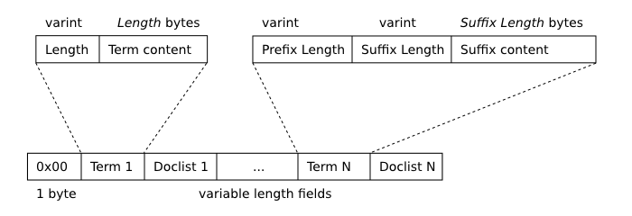
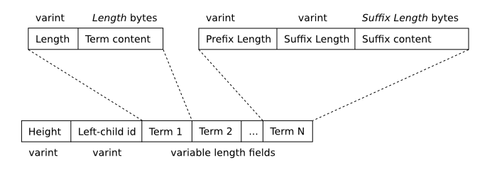
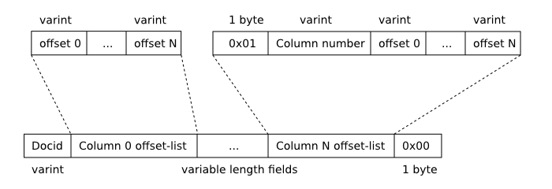

<!-- 由WaterRun使用gpt-5.1-codex-mini翻译, 2026年2月 -->
<!DOCTYPE html>
<html><head>
<meta name="viewport" content="width=device-width, initial-scale=1.0">
<meta http-equiv="content-type" content="text/html; charset=UTF-8">
<link href="sqlite.css" rel="stylesheet">
<title>SQLite FTS3 与 FTS4 扩展</title>
<!-- path= -->
</head>
<body>
<div class=nosearch>
<a href="index.html">

</a>
<div><!-- IE hack to prevent disappearing logo --></div>
<div class="tagline desktoponly">
<div class="translation-credit desktoponly" style="text-align:right;font-size:0.75em;">
由WaterRun使用gpt-5.1-codex-mini翻译
</div>
小巧。快速。可靠。<br>任选其三。
</div>
<div class="menu mainmenu">
<ul>
<li><a href="index.html">首页</a>
<li class='mobileonly'><a href="javascript:void(0)" onclick='toggle_div("submenu")'>菜单</a>
<li class='wideonly'><a href='about.html'>关于</a>
<li class='desktoponly'><a href="docs.html">文档</a>
<li class='desktoponly'><a href="download.html">下载</a>
<li class='wideonly'><a href='copyright.html'>许可证</a>
<li class='desktoponly'><a href="support.html">支持</a>
<li class='desktoponly'><a href="prosupport.html">购买</a>
<li class='desktoponly'><a href="https://github.com/Water-Run/llm-translate-documents">翻译仓库</a>
<li class='search' id='search_menubutton'>
<a href="javascript:void(0)" onclick='toggle_search()'>搜索</a>
</ul>
</div>
<div class="menu submenu" id="submenu">
<ul>
<li><a href='about.html'>关于</a>
<li><a href='docs.html'>文档</a>
<li><a href='download.html'>下载</a>
<li><a href='support.html'>支持</a>
<li><a href='prosupport.html'>购买</a>
<li><a href="https://github.com/Water-Run/llm-translate-documents">翻译仓库</a>
</ul>
</div>
<div class="searchmenu" id="searchmenu">
<form method="GET" action="search">
<select name="s" id="searchtype">
<option value="d">搜索文档</option>
<option value="c">搜索更新日志</option>
</select>
<input type="text" name="q" id="searchbox" value="">
<input type="submit" value="前往">
</form>
</div>
</div>
<script>
function toggle_div(nm) {
var w = document.getElementById(nm);
if( w.style.display=="block" ){
w.style.display = "none";
}else{
w.style.display = "block";
}
}
function toggle_search() {
var w = document.getElementById("searchmenu");
if( w.style.display=="block" ){
w.style.display = "none";
} else {
w.style.display = "block";
setTimeout(function(){
document.getElementById("searchbox").focus()
}, 30);
}
}
function div_off(nm){document.getElementById(nm).style.display="none";}
window.onbeforeunload = function(e){div_off("submenu");}
/* Disable the Search feature if we are not operating from CGI, since */
/* Search is accomplished using CGI and will not work without it. */
if( !location.origin || !location.origin.match || !location.origin.match(/http/) ){
document.getElementById("search_menubutton").style.display = "none";
}
/* Used by the Hide/Show button beside syntax diagrams, to toggle the */
function hideorshow(btn,obj){
var x = document.getElementById(obj);
var b = document.getElementById(btn);
if( x.style.display!='none' ){
x.style.display = 'none';
b.innerHTML='show';
}else{
x.style.display = '';
b.innerHTML='hide';
}
return false;
}
var antiRobot = 0;
function antiRobotGo(){
if( antiRobot!=3 ) return;
antiRobot = 7;
var j = document.getElementById("mtimelink");
if(j && j.hasAttribute("data-href")) j.href=j.getAttribute("data-href");
}
function antiRobotDefense(){
document.body.onmousedown=function(){
antiRobot |= 2;
antiRobotGo();
document.body.onmousedown=null;
}
document.body.onmousemove=function(){
antiRobot |= 2;
antiRobotGo();
document.body.onmousemove=null;
}
setTimeout(function(){
antiRobot |= 1;
antiRobotGo();
}, 100)
antiRobotGo();
}
antiRobotDefense();
</script>
<div class=fancy>
<div class=nosearch>
<div class="fancy_title">
SQLite FTS3 与 FTS4 扩展
</div>
<details class="fancy_toc">
<summary>目录</summary>
<div id="toc_sub"><div class="fancy-toc1"><a href="#introduction_to_fts3_and_fts4">1. FTS3 与 FTS4 简介</a></div>
<div class="fancy-toc2"><a href="#differences_between_fts3_and_fts4">1.1. FTS3 与 FTS4 之间的差异</a></div>
<div class="fancy-toc2"><a href="#creating_and_destroying_fts_tables">1.2. 创建与销毁 FTS 表</a></div>
<div class="fancy-toc2"><a href="#populating_fts_tables">1.3. 填充 FTS 表</a></div>
<div class="fancy-toc2"><a href="#simple_fts_queries">1.4. 简单的 FTS 查询</a></div>
<div class="fancy-toc2"><a href="#summary">1.5. 总结</a></div>
<div class="fancy-toc1"><a href="#compiling_and_enabling_fts3_and_fts4">2. 编译并启用 FTS3 与 FTS4</a></div>
<div class="fancy-toc1"><a href="#full_text_index_queries">3. 全文索引查询</a></div>
<div class="fancy-toc2"><a href="#_set_operations_using_the_enhanced_query_syntax">3.1. 使用增强查询语法的集合运算</a></div>
<div class="fancy-toc2"><a href="#set_operations_using_the_standard_query_syntax">3.2. 使用标准查询语法的集合运算</a></div>
<div class="fancy-toc1"><a href="#auxiliary_functions_snippet_offsets_and_matchinfo">4. 辅助函数 - 片段、偏移与 matchinfo</a></div>
<div class="fancy-toc2"><a href="#the_offsets_function">4.1. offsets 函数</a></div>
<div class="fancy-toc2"><a href="#the_snippet_function">4.2. snippet 函数</a></div>
<div class="fancy-toc2"><a href="#matchinfo">4.3. matchinfo 函数</a></div>
<div class="fancy-toc1"><a href="#fts4aux">5. Fts4aux - 直接访问全文索引</a></div>
<div class="fancy-toc1"><a href="#fts4_options">6. FTS4 选项</a></div>
<div class="fancy-toc2"><a href="#the_compress_and_uncompress_options">6.1. compress 与 uncompress 选项</a></div>
<div class="fancy-toc2"><a href="#the_content_option_">6.2. content 选项</a></div>
<div class="fancy-toc3"><a href="#_contentless_fts4_tables_">6.2.1. 无内容 FTS4 表</a></div>
<div class="fancy-toc3"><a href="#_external_content_fts4_tables_">6.2.2. 外部内容 FTS4 表</a></div>
<div class="fancy-toc2"><a href="#the_languageid_option">6.3. languageid 选项</a></div>
<div class="fancy-toc2"><a href="#the_matchinfo_option">6.4. matchinfo 选项</a></div>
<div class="fancy-toc2"><a href="#the_notindexed_option">6.5. notindexed 选项</a></div>
<div class="fancy-toc2"><a href="#the_prefix_option">6.6. prefix 选项</a></div>
<div class="fancy-toc1"><a href="#commands">7. FTS3 与 FTS4 的特殊命令</a></div>
<div class="fancy-toc2"><a href="#optimize">7.1. “optimize” 命令</a></div>
<div class="fancy-toc2"><a href="#rebuild">7.2. “rebuild” 命令</a></div>
<div class="fancy-toc2"><a href="#integcheck">7.3. “integrity-check” 命令</a></div>
<div class="fancy-toc2"><a href="#mergecmd">7.4. “merge=X,Y” 命令</a></div>
<div class="fancy-toc2"><a href="#automerge"">7.5. “automerge=N” 命令</a></div>
<div class="fancy-toc1"><a href="#tokenizer">8. 分词器</a></div>
<div class="fancy-toc2"><a href="#custom_application_defined_tokenizers">8.1. 自定义（应用定义）分词器</a></div>
<div class="fancy-toc2"><a href="#querying_tokenizers">8.2. 查询分词器</a></div>
<div class="fancy-toc1"><a href="#data_structures">9. 数据结构</a></div>
<div class="fancy-toc2"><a href="#shadow_tables">9.1. 影子表</a></div>
<div class="fancy-toc2"><a href="#variable_length_integer_varint_format">9.2. 可变长度整数（varint）格式</a></div>
<div class="fancy-toc2"><a href="#segment_b_tree_format">9.3. 段 B 树格式</a></div>
<div class="fancy-toc3"><a href="#segment_b_tree_leaf_nodes">9.3.1. 段 B 树叶节点</a></div>
<div class="fancy-toc3"><a href="#segment_b_tree_interior_nodes">9.3.2. 段 B 树内部节点</a></div>
<div class="fancy-toc2"><a href="#doclist_format">9.4. 文档列表格式</a></div>
<div class="fancy-toc1"><a href="#limitations">10. 限制</a></div>
<div class="fancy-toc2"><a href="#_utf_16_byte_order_mark_problem_">10.1. UTF-16 字节次序标记问题</a></div>
<div class="fancy-toc1"><a href="#appendix_a">附录 A：搜索应用建议</a></div>
</div>
</details>
</div>


<h2 id="overview" style="margin-left:1.0em" notoc="1"> 概述</h2>

<p>
  FTS3 与 FTS4 是 SQLite 的虚拟表模块，允许用户对一组文档执行全文搜索。
  描述全文搜索的最常见（且有效）方式是“Google、Yahoo 与 Bing 在万维网上处理文档的方式”。
  用户输入一个词或一系列词，可能通过二元运算符连接或组成短语，全文查询系统会根据用户指定的运算符和分组查找最匹配这些词的文档集合。
  本文介绍了 FTS3 与 FTS4 的部署与使用。

</p><p>
  FTS1 与 FTS2 是 SQLite 中已废弃的全文搜索模块。这些旧模块存在已知问题，应避免使用。
  原始 FTS3 代码的一部分由 <a href="http://www.google.com">Google</a> 的 Scott Hess 贡献给 SQLite 项目。
  它现在作为 SQLite 的一部分进行开发与维护。

</p><h1 id="introduction_to_fts3_and_fts4"><span>1. </span>FTS3 与 FTS4 简介</h1>

<p>
  FTS3 与 FTS4 扩展模块允许用户创建内置全文索引的特殊表（以下简称“FTS 表”）。
  全文索引使用户能高效查询数据库中包含一个或多个单词（以下简称“词元”）的所有行，即使该表包含许多较大的文档。

</p><p>
  例如，如果将 "<a href="http://www.cs.cmu.edu/~enron/">Enron 电子邮件数据集</a>" 中的 517430 篇文档
  插入到以下 SQL 脚本创建的一个 FTS 表和一个普通 SQLite 表中：

</p><div class="codeblock"><pre>CREATE VIRTUAL TABLE enrondata1 USING fts3(content TEXT);     /* FTS3 表 */
CREATE TABLE enrondata2(content TEXT);                        /* 普通表 */
</pre></div>

<p>
  然后下面两个查询中的任意一个都可以执行以计算数据库中包含单词 “linux” 的文档数量（351）。
  在某台桌面 PC 上，针对 FTS3 表的查询耗时约 0.03 秒，而查询普通表则耗时 22.5 秒。

</p><div class="codeblock"><pre>SELECT count(*) FROM enrondata1 WHERE content MATCH 'linux';  /* 0.03 秒 */
SELECT count(*) FROM enrondata2 WHERE content LIKE '%linux%'; /* 22.5 秒 */
</pre></div>

<p>
  当然，上述两个查询并非完全等价。
  例如 LIKE 查询会匹配包含 “linuxophobe” 或 “EnterpriseLinux” 之类词项的行（不过 Enron 电子邮件数据集中实际并不包含这些词），而 FTS3 表上的 MATCH 查询仅选择那些将 “linux” 作为独立词元的行。
  两种搜索均对大小写不敏感。FTS3 表在磁盘上约占 2006 MB，而普通表仅占 1453 MB。
  使用与上述 SELECT 查询相同的硬件配置，FTS3 表的填充耗时略少于 31 分钟，而普通表耗时 25 分钟。

</p><h2 id="differences_between_fts3_and_fts4"><span>1.1. </span>FTS3 与 FTS4 之间的差异</h2>
<a name="fts4"></a>


<p>
  FTS3 与 FTS4 几乎相同。它们共享大部分代码，接口也一致。区别在于：

</p><ul>
  <li> <p> <b>FTS4</b> 包含查询性能优化，这能够显著提高包含非常常见项（出现在大量行中）的全文查询性能。

  </p></li><li> <p> <b>FTS4</b> 支持可与 <a href="fts3.html#matchinfo">matchinfo()</a> 函数配合使用的一些额外选项。

  </p></li><li> <p> 由于为支持性能优化与额外的 matchinfo() 选项，FTS4 表在磁盘上会将额外信息存储在两个新的 <a href="fts3.html#*shadowtab">影子表</a> 中，因此相对于等效 FTS3 表可能占用更多磁盘空间。
       通常开销为 1-2% 或更少，但当 FTS 表中存储的文档非常小时，开销最高可达 10%。可以通过在 FTS4 表声明中添加指令 <a href="fts3.html#fts4matchinfo">"matchinfo=fts3"</a> 来减小开销，但这样会牺牲部分额外的 matchinfo() 选项支持。

  </p></li><li> <p> FTS4 提供了钩子（compress 与 uncompress <a href="fts3.html#fts4_options">选项</a>），允许以压缩形式存储数据，从而减少磁盘使用与 IO。
</p></li></ul>

<p>
  FTS4 是对 FTS3 的增强。
  FTS3 自 SQLite <a href="releaselog/3_5_0.html">3.5.0 版本</a>（2007-09-04）起提供。
  FTS4 的增强随 SQLite <a href="releaselog/3_7_4.html">3.7.4 版本</a>（2010-12-07）加入。

</p><p>
  在应用中应使用 FTS3 还是 FTS4？FTS4 有时比 FTS3 快几个数量级（视查询而定），尽管在常见情况下两者性能相似。
  FTS4 还提供增强的 <a href="fts3.html#matchinfo">matchinfo()</a> 输出，可用于排名 <a href="fts3.html#full_text_index_queries">MATCH</a> 操作的结果。
  另一方面，如果没有指定 <a href="fts3.html#fts4matchinfo">matchinfo=fts3</a> 指令，FTS4 相比 FTS3 会占用略多一点磁盘空间（通常只多 1-2%）。

</p><p>
  对于新应用，建议使用 FTS4；但如果需要兼容旧版 SQLite，则 FTS3 通常也能很好地满足需求。

</p><h2 id="creating_and_destroying_fts_tables"><span>1.2. </span>创建与销毁 FTS 表</h2>

<p>
  与其他虚拟表类型一样，新 FTS 表通过 <a href="lang_createvtab.html">CREATE VIRTUAL TABLE</a> 语句创建。
  USING 关键字后的模块名为 "fts3" 或 "fts4"。
  虚拟表模块参数可为空，此时创建一个只有用户定义的名为 "content" 的单列 FTS 表。
  也可以传入以逗号分隔的列名列表。

</p><p>
  如果在 CREATE VIRTUAL TABLE 语句中显式提供了 FTS 表的列名，还可以为每列可选地指定数据类型名称。这只是语法糖，FTS 或 SQLite 核心不会使用这些类型名称。
  同样，随列名指定的约束都会被解析，但不会被系统以任何方式使用或记录。

</p><div class="codeblock"><pre><i>-- 创建名为 "data"、含一列 "content" 的 FTS 表：</i>
CREATE VIRTUAL TABLE data USING fts3();

<i>-- 创建名为 "pages"、含三列的 FTS 表：</i>
CREATE VIRTUAL TABLE pages USING fts4(title, keywords, body);

<i>-- 创建名为 "mail"、含两列的 FTS 表。为每列指定了数据类型</i>
<i>-- 与列约束。这些在 FTS 与 SQLite 中完全被忽略。</i>
CREATE VIRTUAL TABLE mail USING fts3(
  subject VARCHAR(256) NOT NULL,
  body TEXT CHECK(length(body)<10240)
);
</pre></div>

<p>
  除了列列表之外，还可以通过 CREATE VIRTUAL TABLE 语句的模块参数指定 <a href="fts3.html#tokenizer">分词器</a>。
  方式是在列名位置写入形式为 "tokenize=<分词器名> <分词器参数>" 的字符串，其中 <分词器名> 是要使用的分词器名称，<分词器参数> 为可选的以空格分隔的修饰符传递给分词器实现。
  分词器说明可以出现在列列表的任意位置，但每个 CREATE VIRTUAL TABLE 语句最多允许声明一个分词器。
  <a href="fts3.html#tokenizer">下文</a>包含对使用（以及必要时实现）分词器的详细介绍。

</p><div class="codeblock"><pre><i>-- 创建一个名为 "papers"、含两列并使用</i>
<i>-- 分词器 "porter" 的 FTS 表。</i>
CREATE VIRTUAL TABLE papers USING fts3(author, document, tokenize=porter);

<i>-- 创建一个只有 "content" 列且使用</i>
<i>-- “simple” 分词器的 FTS 表。</i>
CREATE VIRTUAL TABLE data USING fts4(tokenize=simple);

<i>-- 创建一个含两列并使用 “icu” 分词器的 FTS 表。</i>
<i>-- 修饰符 "en_AU" 传递给分词器实现。</i>
CREATE VIRTUAL TABLE names USING fts3(a, b, tokenize=icu en_AU);
</pre></div>

<p>
  可以使用普通的 <a href="lang_droptable.html">DROP TABLE</a> 语句从数据库中删除 FTS 表。例如：

</p><div class="codeblock"><pre><i>-- 创建然后立即删除一个 FTS4 表。</i>
CREATE VIRTUAL TABLE data USING fts4();
DROP TABLE data;
</pre></div>

<h2 id="populating_fts_tables"><span>1.3. </span>填充 FTS 表</h2>

  <p>
    FTS 表通过 <a href="lang_insert.html">INSERT</a>、<a href="lang_update.html">UPDATE</a> 与 <a href="lang_delete.html">DELETE</a>
    语句填充，就像普通 SQLite 表一样。

  </p><p>
    除了用户指定的列（如果未在 CREATE VIRTUAL TABLE 语句中指定模块参数，则默认为 "content" 列）之外，每个 FTS 表还有一个 "rowid" 列。
    FTS 表的 rowid 行为与普通 SQLite 表的 rowid 列相同，不同之处在于即使使用 <a href="lang_vacuum.html">VACUUM</a> 命令重建数据库，FTS 表的 rowid 值也保持不变。
    对于 FTS 表，"docid" 除了常规的 "rowid"、"oid" 和 "_oid_" 标识符外也可作为别名。
    尝试插入或更新已有 docid 值的行会报错，与普通 SQLite 表相同。

  </p><p>
    “docid” 与 rowid 别名之间还有一个细微差别。通常如果 INSERT 或 UPDATE 语句为两个或多个 rowid 别名赋值，SQLite 会在数据库中写入语句中最右边的值。
    然而在插入或更新 FTS 表时，如果同时为 “docid” 与一个或多个 SQLite rowid 别名赋非 NULL 值，会被视为错误。下文有示例。

</p><div class="codeblock"><pre><i>-- 创建一个 FTS 表</i>
CREATE VIRTUAL TABLE pages USING fts4(title, body);

<i>-- 插入具有特定 docid 的行。</i>
INSERT INTO pages(docid, title, body) VALUES(53, 'Home Page', 'SQLite is a software...');

<i>-- 插入一行并让 FTS 使用与普通表相同的算法分配 docid。</i>
<i>-- 在本例中，新 docid 是 54，即当前表中最大 docid 的下一个整数。</i>
INSERT INTO pages(title, body) VALUES('Download', 'All SQLite source code...');

<i>-- 更改刚插入行的标题。</i>
UPDATE pages SET title = 'Download SQLite' WHERE rowid = 54;

<i>-- 删除表中所有内容。</i>
DELETE FROM pages;

<i>-- 以下语句会报错。无法同时为 FTS 表的 rowid 与 docid 列分配非 NULL 值。</i>
INSERT INTO pages(rowid, docid, title, body) VALUES(1, 2, 'A title', 'A document body');
</pre></div>

  <p>
    为支持全文查询，FTS 维护一个倒排索引，该索引将出现于数据集中每个唯一项（或词）映射到其在表内容中出现的位置。
    对于感兴趣的读者，下面有一个完整描述用于在数据库文件中存储该索引的 <a href="fts3.html#data_structures">数据结构</a>。
    该结构的特点是数据库中可能同时存在多个索引 B 树，它们会随着插入、更新与删除操作而逐渐合并。
    此技术在写入 FTS 表时提高性能，但对于使用该索引的全文查询会带来一些开销。
    执行特殊的 <a href="fts3.html#*fts4optcmd">“optimize” 命令</a>（SQL 语句形式为 "INSERT INTO <fts 表名称>(<fts 表名称>) VALUES('optimize')"）会使 FTS 合并所有现有的索引 B 树为一个包含完整索引的大型 B 树。
    这可能是个昂贵操作，但能加快后续查询。

  </p><p>
    例如，要优化名为 "docs" 的 FTS 表的全文索引：

</p><div class="codeblock"><pre><i>-- 优化 FTS 表 "docs" 的内部结构。</i>
INSERT INTO docs(docs) VALUES('optimize');
</pre></div>

  <p>
    上述语句对某些人而言看起来语法不正确。请参阅 <a href="fts3.html#simple_fts_queries">简单 FTS 查询</a> 部分以获取解释。

  </p><p>
    还有一种不推荐使用的方式通过 SELECT 语句调用 optimize 操作。新代码应使用类似上面的 INSERT 语句来优化 FTS 结构。

</p><a name="simple_fts_queries"></a>
<h2 tags="simple fts queries" id="simple_fts_queries"><span>1.4. </span>简单的 FTS 查询</h2>

<p>
  与所有其他 SQLite 表一样（无论是否为虚拟表），FTS 表通过 <a href="lang_select.html">SELECT</a> 语句来检索数据。

</p><p>
  FTS 表可以高效地使用两种形式的 SELECT 语句进行查询：

</p><ul>
  <li><p>
    <b>按 rowid 查询</b>。如果 SELECT 语句的 WHERE 子句包含形如 "rowid = ?" 的子表达式（其中 ? 是一个 SQL 表达式），FTS 就可以直接通过相当于 SQLite <a href="lang_createtable.html#rowid">INTEGER PRIMARY KEY</a> 索引的方式检索请求的行。

  </p></li><li><p>
    <b>全文查询</b>。如果 SELECT 语句的 WHERE 子句包含形如 "<column> MATCH ?" 的子表达式，FTS 就可以使用内置全文索引将搜索范围限制为匹配 MATCH 子句右侧全文查询字符串的文档。
</p></li></ul>

<p>
  如果上述两种查询策略都无法使用，FTS 表的所有查询都通过对整张表的线性扫描实现。
  如果表中包含大量数据，这可能是不切实际的（本页第一个示例表明，对 1.5 GB 数据进行线性扫描时，现代 PC 大约需要 30 秒）。

</p><div class="codeblock"><pre><i>-- 本代码块中的示例假设如下 FTS 表：</i>
CREATE VIRTUAL TABLE mail USING fts3(subject, body);

SELECT * FROM mail WHERE rowid = 15;                <i>-- 快速。按 rowid 查找。</i>
SELECT * FROM mail WHERE body MATCH 'sqlite';       <i>-- 快速。全文查询。</i>
SELECT * FROM mail WHERE mail MATCH 'search';       <i>-- 快速。全文查询。</i>
SELECT * FROM mail WHERE rowid BETWEEN 15 AND 20;   <i>-- 快速。按 rowid 区间查找。</i>
SELECT * FROM mail WHERE subject = 'database';      <i>-- 缓慢。线性扫描。</i>
SELECT * FROM mail WHERE subject MATCH 'database';  <i>-- 快速。全文查询。</i>
</pre></div>

<p>
  在上述所有全文查询中，MATCH 运算符右侧的操作数均为单一词项字符串。
  这种情况下，MATCH 表达式对于所有包含指定词（根据示例是 “sqlite”、“search” 或 “database”）的文档求值为真。
  将简单词元作为 MATCH 运算符右侧操作数是最简单且最常见的全文查询方式。
  当然也可以构造更复杂的查询，包括短语搜索、词元前缀搜索以及查找在一定范围内组合出现的词元。
  <a href="fts3.html#full_text_index_queries">下面</a>描述了查询全文索引的各种方法。

</p><p>
  通常全文查询对大小写不敏感。不过这取决于正在查询的 FTS 表使用的特定 <a href="fts3.html#tokenizer">分词器</a>。
  详情请参考 <a href="fts3.html#tokenizer">分词器</a> 一节。

</p><p>
  上文指出，当 MATCH 运算符右侧操作数为简单词元时，只要文档包含指定词，该表达式就为真。
  在此语境中，“文档”可以指单行中某个列的值，也可以指整行所有列内容，这取决于 MATCH 运算符左侧所使用的标识符。
  如果左侧标识符是 FTS 表的列名，则搜索词必须出现在该列。
  但如果左侧是 FTS <i>表</i> 的名称，则 MATCH 运算符对于该行中任意列包含搜索词的情况均返回真。
  下例说明了这一点：

</p><div class="codeblock"><pre><i>-- 示例模式</i>
CREATE VIRTUAL TABLE mail USING fts3(subject, body);

<i>-- 示例表填充</i>
INSERT INTO mail(docid, subject, body) VALUES(1, 'software feedback', 'found it too slow');
INSERT INTO mail(docid, subject, body) VALUES(2, 'software feedback', 'no feedback');
INSERT INTO mail(docid, subject, body) VALUES(3, 'slow lunch order',  'was a software problem');

<i>-- 示例查询</i>
SELECT * FROM mail WHERE subject MATCH 'software';    <i>-- 选中第 1 和第 2 行</i>
SELECT * FROM mail WHERE body    MATCH 'feedback';    <i>-- 选中第 2 行</i>
SELECT * FROM mail WHERE mail    MATCH 'software';    <i>-- 选中第 1、2、3 行</i>
SELECT * FROM mail WHERE mail    MATCH 'slow';        <i>-- 选中第 1 和第 3 行</i>
</pre></div>

<p>
  乍一看，上述最后两个全文查询似乎语法不合法，因为其中使用了表名（"mail"）作为 SQL 表达式。
  之所以可以这样写，是因为每个 FTS 表实际上都有一个与表同名的 <a href="c3ref/declare_vtab.html">隐藏</a> 列（本例为 "mail"）。
  此列中存储的值对应用程序而言无实际意义，但可以用作 MATCH 运算符的左侧操作数。
  该特殊列也可以作为 <a href="fts3.html#snippet">FTS 辅助函数</a> 的参数。

</p><p>
  以下示例进一步说明上述内容。表达式 "docs"、"docs.docs" 以及 "main.docs.docs" 都指向列 "docs"。
  然而表达式 "main.docs" 并不指向任何列。它可以指向表名，但在下文出现的上下文中不能使用表名。

</p><div class="codeblock"><pre><i>-- 示例模式</i>
CREATE VIRTUAL TABLE docs USING fts4(content);

<i>-- 示例查询</i>
SELECT * FROM docs WHERE docs MATCH 'sqlite';              <i>-- 合法。</i>
SELECT * FROM docs WHERE docs.docs MATCH 'sqlite';         <i>-- 合法。</i>
SELECT * FROM docs WHERE main.docs.docs MATCH 'sqlite';    <i>-- 合法。</i>
SELECT * FROM docs WHERE main.docs MATCH 'sqlite';         <i>-- 错误。</i>
</pre></div>

<h2 id="summary"><span>1.5. </span>总结</h2>

<p>
  从用户角度来看，FTS 表在许多方面类似于普通 SQLite 表。
  通过 INSERT、UPDATE 与 DELETE 命令可以向 FTS 表添加、修改以及删除数据，就像对普通表一样。
  同样，SELECT 命令可用于查询数据。下列列表总结了 FTS 表与普通表之间的区别：

</p><ol>
  <li><p>
    与所有虚拟表类型一样，FTS 表无法创建索引或触发器。
    也无法使用 ALTER TABLE 命令向 FTS 表添加额外列（不过可以使用 ALTER TABLE 重命名 FTS 表）。

  </p></li><li><p>
    在用于创建 FTS 表的 CREATE VIRTUAL TABLE 语句中指定的数据类型完全被忽略。
    与普通表应用类型 <a href="datatype3.html#affinity">亲和力</a> 的规则不同，插入 FTS 表列（除了特殊的 rowid 列）前，所有值都会转换为 TEXT 类型再存储。

  </p></li><li><p>
    FTS 表允许使用特殊别名 "docid" 来引用所有 <a href="vtab.html">虚拟表</a> 都支持的 rowid 列。

  </p></li><li><p>
    支持基于内置全文索引的 <a href="fts3.html#full_text_index_queries">FTS MATCH</a> 操作符。

  </p></li><li><p>
    可使用 <a href="fts3.html#snippet">FTS 辅助函数</a>：<a href="fts3.html#snippet">snippet()</a>、<a href="fts3.html#offsets">offsets()</a> 与 <a href="fts3.html#matchinfo">matchinfo()</a> 来支持全文查询。

  </p></li><li><p>
    <a name="hiddencol"></a>

    每个 FTS 表都有一个与表同名的 <a href="vtab.html#hiddencol">隐藏列</a>。
    每行隐藏列中存储的是一个二进制，唯一用于作为 <a href="fts3.html#full_text_index_queries">MATCH</a> 操作符的左侧操作数，
    或作为 <a href="fts3.html#snippet">FTS 辅助函数</a> 的最左参数。


</p></li></ol>


<a name="compiling_and_enabling_fts3_and_fts4"></a>
<h1 tags="compile fts" id="compiling_and_enabling_fts3_and_fts4"><span>2. </span>编译并启用 FTS3 与 FTS4</h1>

<p>
  虽然 FTS3 与 FTS4 已包含在 SQLite 核心源代码中，但默认未启用。
  若要构建启用 FTS 功能的 SQLite，请在编译时定义预处理宏 <a href="compile.html#enable_fts3">SQLITE_ENABLE_FTS3</a>。
  新应用还应定义 <a href="compile.html#enable_fts3_parenthesis">SQLITE_ENABLE_FTS3_PARENTHESIS</a> 宏，以启用 <a href="fts3.html#_set_operations_using_the_enhanced_query_syntax">增强查询语法</a>（见下文）。
  通常在编译器命令行中添加以下两个开关即可：

</p><div class="codeblock"><pre>-DSQLITE_ENABLE_FTS3
-DSQLITE_ENABLE_FTS3_PARENTHESIS
</pre></div>

<p>
  注意，启用 FTS3 也会使 FTS4 可用。
  SQLite 并没有单独的 SQLITE_ENABLE_FTS4 编译选项。
  SQLite 的构建要么同时支持 FTS3 与 FTS4，要么全都不支持。

</p><p>
  如果使用标准构建系统，在运行 configure 脚本时设置 CPPFLAGS 环境变量是一种便捷方式来定义这些宏。
  例如，以下命令：

</p><div class="codeblock"><pre>CPPFLAGS="-DSQLITE_ENABLE_FTS3_PARENTHESIS" ./configure --enable-fts3 <configure options>
</pre></div>

<p>
  其中 <i>&lt;configure options&gt;</i> 是通常传递给 configure 脚本的选项（如有）。

</p><p>
  由于 FTS3 与 FTS4 是虚拟表，因此 <a href="compile.html#enable_fts3">SQLITE_ENABLE_FTS3</a> 编译时选项
  与 <a href="compile.html#omit_virtualtable">SQLITE_OMIT_VIRTUALTABLE</a> 选项不兼容。

</p><p>
  如果某个 SQLite 构建未包含这些 FTS 模块，则尝试准备用于创建 FTS3 或 FTS4 表、删除或以任何方式访问现有 FTS 表的 SQL 语句都会失败。
  返回的错误消息类似于 “no such module: ftsN”（其中 N 为 3 或 4）。

</p><p>
  如果可用 C 版本的 <a href="https://icu.unicode.org">ICU 库</a>，也可以在编译时定义 SQLITE_ENABLE_ICU 预处理宏以启用 FTS。
  使用该宏编译可以启用一个使用 ICU 库将文档拆分为词的 <a href="fts3.html#tokenizer">分词器</a>，该分词器依据指定语言和区域的约定进行分词。

</p><div class="codeblock"><pre>-DSQLITE_ENABLE_ICU
</pre></div>

<p>
  在标准构建树版本 3.48 或更高版本中，可通过 configure 脚本标志启用 ICU：
  详见 <code>./configure --help</code>。

</p><a name="full_text_index_queries"></a>
<h1 tags="FTS MATCH" id="full_text_index_queries"><span>3. </span>全文索引查询</h1>

<p>
  FTS 表最有用的功能便是其内置全文索引支持的查询。
  全文查询通过在从 FTS 表读取数据的 SELECT 语句的 WHERE 子句中指定 "<column> MATCH <全文查询表达式>" 形式的子句来实现。
  <a href="fts3.html#simple_fts_queries">简单 FTS 查询</a> 在上文中已介绍，用于返回包含某个词的所有文档。
  在该讨论中，我们假设 MATCH 运算符的右侧操作数是由单一词组成的字符串。
  本节将描述 FTS 表支持的更复杂查询类型，以及如何通过指定复杂的查询表达式作为 MATCH 运算符的右侧操作数来使用它们。

</p><p>
  FTS 表支持三种基本查询类型：

</p><ul>
  <a name="termprefix"></a>

  <li><p><b>词或词前缀查询</b>。
    FTS 表可以查询包含指定词（前文提到的 <a href="fts3.html#simple_fts_queries">简单情况</a>）的文档，
    也可以查询包含具有指定前缀的词的文档。
    如前所述，查询特定词的表达式就是该词本身。
    若要搜索词前缀，则在前缀末尾添加一个 '*' 字符。例如：
</p></li></ul>

<div class="codeblock"><pre><i>-- 虚拟表声明</i>
CREATE VIRTUAL TABLE docs USING fts3(title, body);

<i>-- 查询包含词 "linux" 的所有文档：</i>
SELECT * FROM docs WHERE docs MATCH 'linux';

<i>-- 查询包含前缀为 "lin" 的词的所有文档。这将匹配</i>
<i>-- 包含 "linux" 的文档，也会匹配包含 "linear"、</i>
<i>--"linker"、"linguistic" 等词的文档。</i>
SELECT * FROM docs WHERE docs MATCH 'lin*';
</pre></div>

<ul>
  <li style="list-style:none"><p>
    通常，词或词前缀查询会针对 MATCH 运算符左侧指定的 FTS 表列执行。
    或者如果指定的是与 FTS 表同名的特殊列，则会针对所有列执行。
    可以通过在基本词查询之前指定 “列名:” 的方式覆盖这一行为。列名与 “:” 之间不可插入空格，
    但 “:” 与后续要查询的词之间可以有空格。例如：
</p></li></ul>

<div class="codeblock"><pre><i>-- 查询文档，其中词 "linux" 出现在标题中，且词 "problems" 出现在标题</i>
<i>-- 或正文中。</i>
SELECT * FROM docs WHERE docs MATCH 'title:linux problems';

<i>-- 查询文档，其中词 "linux" 出现在标题中，词 "driver" 出现在正文中</i>
<i>--（"driver" 也可以出现在标题中，但仅此不足以满足查询条件）。</i>
SELECT * FROM docs WHERE body MATCH 'title:linux driver';
</pre></div>

<ul>
  <li style="list-style:none"><p>
    如果 FTS 表是 FTS4 而非 FTS3，还可以在词前加上 "^" 字符。在这种情况下，为匹配，该词必须出现在某列的最首位置。示例：
</p></li></ul>

<div class="codeblock"><pre><i>-- 选出至少有一列的第一个词为 "linux" 的所有文档。</i>
SELECT * FROM docs WHERE docs MATCH '^linux';

<i>-- 选出在 "body" 列中第一个词以 "lin" 开头的所有文档。</i>
SELECT * FROM docs WHERE body MATCH 'title: ^lin*';
</pre></div>

<a name="phrase"></a>

<ul>
  <li><p><b>短语查询</b>。
    短语查询用于检索包含按指定顺序出现、且中间无其他词的词或词前缀序列的文档。
    通过在双引号（"）中包含由空格分隔的词或词前缀即可指定短语查询。例如：
</p></li></ul>

<div class="codeblock"><pre><i>-- 查询包含短语 "linux applications" 的所有文档。</i>
SELECT * FROM docs WHERE docs MATCH '"linux applications"';

<i>-- 查询包含与 "lin* app*" 匹配的短语的所有文档。除了</i>
<i>-- "linux applications" 之外，还可以匹配常见短语如</i>
<i>--"linoleum appliances" 或 "link apprentice"。</i>
SELECT * FROM docs WHERE docs MATCH '"lin* app*"';
</pre></div>

<a name="near"></a>

<ul>
  <li><p><b>NEAR 查询</b>。
    NEAR 查询用于返回包含两个或更多指定词或短语且彼此距离在限定范围内（默认不超过 10 个中间词）的文档。
    NEAR 查询通过在两个短语、词或词前缀查询之间插入关键字 "NEAR" 来指定。
    若要指定非默认的距离，可使用形如 "NEAR/<i>&lt;N&gt;</i>" 的运算符，其中 <i>&lt;N&gt;</i> 是允许的最大中间词数。
    例如：
</p></li></ul>

<div class="codeblock"><pre><i>-- 虚拟表声明。</i>
CREATE VIRTUAL TABLE docs USING fts4();

<i>-- 虚拟表数据。</i>
INSERT INTO docs VALUES('SQLite is an ACID compliant embedded relational database management system');

<i>-- 查找包含 "sqlite" 与 "database" 且最多相隔 10 个词的文档。</i>
<i>-- 该查询匹配 docs 表内唯一一条记录（因为 "SQLite" 与</i>
<i>-- "database" 之间仅有六个词）。</i>
SELECT * FROM docs WHERE docs MATCH 'sqlite NEAR database';

<i>-- 查找包含 "sqlite" 与 "database" 且最多相隔 6 个词的文档。</i>
<i>-- 该查询仍然匹配 docs 表内唯一一条记录。注意，</i>
<i>-- 文档中词的顺序不必与查询顺序相同。</i>
SELECT * FROM docs WHERE docs MATCH 'database NEAR/6 sqlite';

<i>-- 查找包含 "sqlite" 与 "database" 且最多相隔 5 个词的文档。</i>
<i>-- 该查询不匹配任何文档。</i>
SELECT * FROM docs WHERE docs MATCH 'database NEAR/5 sqlite';

<i>-- 查找包含短语 "ACID compliant" 与词 "database"，且两者之间</i>
<i>-- 不超过 2 个词的文档。该查询匹配 docs 表中的文档。</i>
SELECT * FROM docs WHERE docs MATCH 'database NEAR/2 "ACID compliant"';

<i>-- 查找包含短语 "ACID compliant" 与词 "sqlite"，且两者之间</i>
<i>-- 不超过 2 个词的文档。该查询也匹配 docs 表中的唯一文档。</i>
SELECT * FROM docs WHERE docs MATCH '"ACID compliant" NEAR/2 sqlite';
</pre></div>

<ul>
  <li style="list-style: none"><p>
    单个查询中可以包含多个 NEAR 运算符。在这种情况下，NEAR 运算符分隔的每对词或短语都必须在文档中满足指定的邻近条件。
    下面示例同样使用上述表和数据：
</p></li></ul>

<div class="codeblock"><pre><i>-- 以下查询选出包含词 "sqlite" 与 "acid"，</i>
<i>-- 其中两者之间相隔不超过 2 个词，并且</i>
<i>-- "acid" 与 "relational" 之间也相隔不超过 2 个词的文档。</i>
SELECT * FROM docs WHERE docs MATCH 'sqlite NEAR/2 acid NEAR/2 relational';

<i>-- 该查询不匹配任何文档。尽管存在满足第一个 NEAR 条件</i>
<i>-- 的 "sqlite" 与 "acid"，但它们与 "relational" 的距离</i>
<i>-- 超过了限制。</i>
SELECT * FROM docs WHERE docs MATCH 'acid NEAR/2 sqlite NEAR/2 relational';
</pre></div>

<p>
  短语和 NEAR 查询不能跨越同一行的多个列。

</p><p>
  上面介绍的三种基本查询类型可用于查询全文索引以获取匹配指定条件的文档集合。
  使用 FTS 查询表达式语言可以对基本查询结果执行多种集合运算。
  目前支持三种运算：

</p><ul>
  <li> AND 运算符确定两个文档集合的 <b>交集</b>。

  </li><li> OR 运算符计算两个文档集合的 <b>并集</b>。

  </li><li> NOT 运算符（或在标准语法中使用的一元 "-" 运算符）可用于计算一个集合相对于另一个集合的 <b>相对补集</b>。
</li></ul>

<p>
  FTS 模块可以编译为使用两种略有不同的全文查询语法之一，即“标准”查询语法与“增强”查询语法。
  上述基本词、词前缀、短语与 NEAR 查询在两种语法中均相同。
  但集合运算的指定方式略有差异。下面两个小节分别描述这两种查询语法中关于集合运算的部分。
  有关编译提示，请参考 <a href="fts3.html#compiling_and_enabling_fts3_and_fts4">编译 FTS</a> 描述。

</p><a name="_set_operations_using_the_enhanced_query_syntax"></a>
<h2 tags="enhanced query syntax" id="_set_operations_using_the_enhanced_query_syntax"><span>3.1. </span>
  使用增强查询语法的集合运算</h2>

<p>
  增强查询语法支持 AND、OR 与 NOT 二元集合运算符。
  运算符的两个操作数可以是基本 FTS 查询，也可以是另一种 AND、OR 或 NOT 集合运算的结果。
  运算符必须使用大写字母输入，否则会被解释为基本词查询而非集合运算符。

</p><p>
  AND 运算符可以隐式指定。如果两个基本查询之间没有任何运算符，则结果等同于在它们之间插入一个 AND 运算符。
  例如查询表达式 "implicit operator" 是 "implicit AND operator" 的简写形式。

</p><div class="codeblock"><pre><i>-- 虚拟表声明</i>
CREATE VIRTUAL TABLE docs USING fts3();

<i>-- 虚拟表数据</i>
INSERT INTO docs(docid, content) VALUES(1, 'a database is a software system');
INSERT INTO docs(docid, content) VALUES(2, 'sqlite is a software system');
INSERT INTO docs(docid, content) VALUES(3, 'sqlite is a database');

<i>-- 返回同时包含 "sqlite" 和 "database" 的文档集合。该查询将仅返回 docid=3 的文档。</i>
SELECT * FROM docs WHERE docs MATCH 'sqlite AND database';

<i>-- 再次返回同时包含 "sqlite" 与 "database" 的文档集合。这次使用隐式 AND。结果仍为文档 3。</i>
SELECT * FROM docs WHERE docs MATCH 'database sqlite';

<i>-- 查询包含 "sqlite" 或 "database" 的文档集合。此查询匹配数据库中的所有三条文档。</i>
SELECT * FROM docs WHERE docs MATCH 'sqlite OR database';

<i>-- 查询包含 "database" 且不包含 "sqlite" 的文档。仅文档 1 满足条件。</i>
SELECT * FROM docs WHERE docs MATCH 'database NOT sqlite';

<i>-- 由于 "and" 使用小写，因此被解释为基本词查询而非运算符。</i>
<i>-- 该查询实际匹配同时包含 "database"、"and" 与 "sqlite" 的所有文档。</i>
<i>-- 示例数据中无任何文档满足该条件。</i>
SELECT * FROM docs WHERE docs MATCH 'database and sqlite';
</pre></div>

<p>
  上述示例中，集合运算的两个操作数都是基本全文词查询。
  也可以使用短语与 NEAR 查询，或其他集合运算的结果。
  当 FTS 查询包含多于一个集合运算时，其运算符优先级如下所示：

</p><table striped="1" style="margin:1em auto; width:80%; border-spacing:0">
  <tr style="text-align:left"><th>运算符</th><th>增强查询语法的优先级
  </th></tr><tr style="text-align:left;background-color:#DDDDDD"><td>NOT </td><td> 最高优先级（紧密分组）。
  </td></tr><tr style="text-align:left"><td>AND </td><td>
  </td></tr><tr style="text-align:left;background-color:#DDDDDD"><td>OR  </td><td> 最低优先级（松散分组）。
</td></tr></table>

<p>
  使用增强查询语法时，可通过括号覆盖默认优先级。例如：

</p><div class="codeblock"><pre><i>-- 返回同时包含 "sqlite" 与 "database"、或包含 "library" 的所有文档的 docid。</i>
SELECT docid FROM docs WHERE docs MATCH 'sqlite AND database OR library';

<i>-- 此查询与上述等价。</i>
SELECT docid FROM docs WHERE docs MATCH 'sqlite AND database'
  UNION
SELECT docid FROM docs WHERE docs MATCH 'library';

<i>-- 查询包含词 "linux" 且至少包含短语 "sqlite database" 或 "sqlite library" 的文档。</i>
SELECT docid FROM docs WHERE docs MATCH '("sqlite database" OR "sqlite library") AND linux';

<i>-- 与上述查询等价。</i>
SELECT docid FROM docs WHERE docs MATCH 'linux'
  INTERSECT
SELECT docid FROM (
  SELECT docid FROM docs WHERE docs MATCH '"sqlite library"'
    UNION
  SELECT docid FROM docs WHERE docs MATCH '"sqlite database"'
);
</pre></div>


<h2 id="set_operations_using_the_standard_query_syntax"><span>3.2. </span>使用标准查询语法的集合运算</h2>

<p>
  使用标准查询语法的 FTS 集合运算类似但不完全相同。
  存在四点差异，如下所示：

</p><ol>
  <li value="1"><p> 仅支持 AND 运算符的隐式形式。
    在标准查询语法中，字符序列 "AND" 会被解释为一个词查询，即查找包含词 "and" 的文档。
</p></li></ol>

<ol>
  <li value="2"><p> 不支持括号。
</p></li></ol>

<ol>
  <li value="3"><p> 不支持 NOT 运算符。
    标准查询语法使用一元 "-" 运算符替代 NOT，只能附加在基本词与词前缀查询之上（不能用于短语或 NEAR 查询）。
    带一元 "-" 的词或词前缀不能作为 OR 运算符的操作数。
    FTS 查询不能完全由带一元 "-" 的词或词前缀构成。
</p></li></ol>

<div class="codeblock"><pre><i>-- 查找包含词 "sqlite" 但不包含词 "database" 的文档集合。</i>
SELECT * FROM docs WHERE docs MATCH 'sqlite -database';
</pre></div>

<ol>
  <li value="4"><p> 集合运算的相对优先级不同。
   与标准查询语法一起使用时，"OR" 的优先级高于 "AND"。
   使用标准查询语法时运算符的优先级如下：
</p></li></ol>

<table striped="1" style="margin:1em auto; width:80%; border-spacing:0">
  <tr style="text-align:left"><th>运算符</th><th>标准查询语法的优先级
  </th></tr><tr style="text-align:left;background-color:#DDDDDD"><td>一元 "-" </td><td> 最高优先级（紧密分组）。
  </td></tr><tr style="text-align:left"><td>OR  </td><td>
  </td></tr><tr style="text-align:left;background-color:#DDDDDD"><td>AND </td><td> 最低优先级（松散分组）。
</td></tr></table>

<ol><li style="list-style:none">
  下例说明使用标准查询语法时的运算符优先级：
</li></ol>

<div class="codeblock"><pre><i>-- 在文档集合中查找包含词 "database" 或 "sqlite"，同时也包含词 "library" 的文档。</i>
<i>-- 由于运算符优先级不同，该查询在增强查询语法下的解释也不同。</i>
SELECT * FROM docs WHERE docs MATCH 'sqlite OR database library';
</pre></div>

<a name="snippet"></a>

<h1 id="auxiliary_functions_snippet_offsets_and_matchinfo"><span>4. </span>辅助函数 - 片段、偏移与 Matchinfo</h1>

<p>
  FTS3 与 FTS4 模块提供三个特殊的 SQL 标量函数，对全文查询系统的开发者十分有用：“snippet”、“offsets” 和 “matchinfo”。
  “snippet” 与 “offsets” 函数的目的是帮助用户定位返回文档中查询词的位置。
  “matchinfo” 函数则提供可用于基于相关性过滤或排序查询结果的指标。

</p><p>
  所有三个特殊函数的第一个参数必须是所要应用函数的 FTS 表的 <a href="fts3.html#hiddencol">FTS 隐藏列</a>。
  <a href="fts3.html#hiddencol">FTS 隐藏列</a> 是所有 FTS 表中的自动生成列，名称与 FTS 表相同。
  例如，给定名为 "mail" 的 FTS 表：

</p><div class="codeblock"><pre>SELECT offsets(mail) FROM mail WHERE mail MATCH &lt;全文查询表达式&gt;;
SELECT snippet(mail) FROM mail WHERE mail MATCH &lt;全文查询表达式&gt;;
SELECT matchinfo(mail) FROM mail WHERE mail MATCH &lt;全文查询表达式&gt;;
</pre></div>

<p>
  这三个辅助函数仅在使用 FTS 表全文索引的 SELECT 查询中有用。
  如果在使用“按 rowid 查询”或“线性扫描”策略的 SELECT 中使用，snippet 与 offsets 都返回空字符串，而 matchinfo 返回零字节的二进制值。

<a name="matchable"></a>

</p><p id="matchable">
  所有三个辅助函数都会从 FTS 查询表达式中提取一组“可匹配短语”来处理。
  给定查询的可匹配短语集合包括表达式中的所有短语（包括未加引号的词与词前缀），但排除加有一元 "-" 运算符（标准语法）或作为 NOT 运算符右侧子表达式的部分。

</p><p>
  在下列附加条件成立的前提下，FTS 表中匹配某个可匹配短语的词元序列称为“短语匹配”：

</p><ol>
  <li> 如果可匹配短语位于 FTS 查询表达式中由 NEAR 运算符连接的一系列短语之内，则各短语匹配必须彼此足够接近以满足 NEAR 条件。

  </li><li> 如果 FTS 查询中的可匹配短语限定仅匹配某个特定 FTS 表列中的数据，则仅考虑在该列中出现的短语匹配。
</li></ol>

<a name="offsets"></a>

<h2 id="the_offsets_function"><span>4.1. </span>offsets 函数</h2>

<p>
  对于使用全文索引的 SELECT 查询，offsets() 函数返回一个包含若干空格分隔整数的文本值。
  对于当前行中每个短语匹配的每个词，共返回四个整数。
  返回列表中的每组四个整数的含义如下：

</p><table striped="1" style="margin:1em auto; width:80%; border-spacing:0">
  <tr style="text-align:left"><th>整数 </th><th>含义
  </th></tr><tr style="text-align:left;background-color:#DDDDDD"><td>0
      </td><td>该词所在列的列号（FTS 表最左列为 0，次左为 1，以此类推）。
  </td></tr><tr style="text-align:left"><td>1
      </td><td>当前行中匹配词在全文查询表达式中的词序号。词在查询表达式中按出现顺序从 0 编号。
  </td></tr><tr style="text-align:left;background-color:#DDDDDD"><td>2
      </td><td>该词在列中的字节偏移量。
  </td></tr><tr style="text-align:left"><td>3
      </td><td>匹配词的字节大小。
</td></tr></table>

<p>
  下方代码块包含使用 offsets 函数的示例。

</p><div class="codeblock"><pre>CREATE VIRTUAL TABLE mail USING fts3(subject, body);
INSERT INTO mail VALUES('hello world', 'This message is a hello world message.');
INSERT INTO mail VALUES('urgent: serious', 'This mail is seen as a more serious mail');

<i>-- 下列查询返回单行（仅匹配表 "mail" 的第一条记录）。offsets 函数返回：</i>
<i>-- "0 0 6 5 1 0 24 5"。</i>
<i>--</i>
<i>-- 结果中的第一个四元表示第 0 列包含词 0（"world"），其字节偏移是 6，大小为 5 字节。</i>
<i>-- 第二个四元表示匹配行的第 1 列包含词 0（"world"），偏移 24，大小 5 字节。</i>
SELECT offsets(mail) FROM mail WHERE mail MATCH 'world';

<i>-- 下列查询同样仅匹配第一行，返回文本 "1 0 5 7 1 0 30 7"。</i>
SELECT offsets(mail) FROM mail WHERE mail MATCH 'message';

<i>-- 下列查询匹配表 "mail" 的第二行，返回文本 "1 0 28 7 1 1 36 4"。</i>
<i>-- 仅识别组成短语 "serious mail" 的 "serious" 与 "mail" 的出现；</i>
<i>-- 其它重复出现的则被忽略。</i>
SELECT offsets(mail) FROM mail WHERE mail MATCH '"serious mail"';
</pre></div>

<a name="snippet"></a>

<h2 id="the_snippet_function"><span>4.2. </span>snippet 函数</h2>

<p>
  snippet 函数用于创建文档片段以供全文查询结果展示。
  snippet 函数可以接受一至六个参数，具体如下：

</p><table striped="1" style="margin:1em auto; width:80%; border-spacing:0">
  <tr style="text-align:left"><th>参数 </th><th>默认值 </th><th>说明
  </th></tr><tr style="text-align:left;background-color:#DDDDDD"><td>0 </td><td>无
      </td><td> snippet 函数的第一个参数必须始终是所查询 FTS 表的 <a href="fts3.html#hiddencol">FTS 隐藏列</a>。该列是自动生成列，名称与 FTS 表相同。
  </td></tr><tr style="text-align:left"><td>1 </td><td>"&lt;b&gt;"
      </td><td> 匹配词前的标记文本。
  </td></tr><tr style="text-align:left;background-color:#DDDDDD"><td>2 </td><td>"&lt;/b&gt;"
      </td><td> 匹配词后的标记文本。
  </td></tr><tr style="text-align:left"><td>3 </td><td>"&lt;b&gt;...&lt;/b&gt;"
      </td><td> 省略号文本。
  </td></tr><tr style="text-align:left;background-color:#DDDDDD"><td>4 </td><td>-1
      </td><td> 用于提取片段的 FTS 表列号。列从左到右编号，起始于 0。负值表示可从任意列中提取文本。
  </td></tr><tr style="text-align:left"><td>5 </td><td>-15
      </td><td> 该整数参数的绝对值用于表示返回文本中包含的词元数量（近似值）。允许的最大绝对值为 64。下文中将此值称为 <i>N</i>。</td></tr></table>

<p>
  snippet 函数首先尝试在当前行中找到一个包含 <i>|N|</i> 个词元的文本片段，该片段至少包含每个可匹配短语在当前行中的一次匹配，其中 <i>|N|</i> 是传递给函数的第六个参数的绝对值。
  如果单列中的文本不足 <i>|N|</i> 个词，则将整个列值视为候选。
  文本片段不能跨列。

</p><p>
  若满足条件的文本片段存在，则在返回前应用下列修改：

</p><ul>
  <li> 若片段未从列的开头开始，则在前面添加“省略号”文本。
  </li><li> 若片段未在列末尾结束，则在后面添加“省略号”文本。
  </li><li> 对片段中属于短语匹配的词元，在词元前插入“匹配开始”文本，在词元后插入“匹配结束”文本。
</li></ul>

<p>
  如果存在多个满足条件的片段，则会优先选择包含更多“额外”短语匹配的片段。
  在选定片段时会尝试前后移动几词，从而将匹配集中在片段中央。

</p><p>
  假设 <i>N</i> 为正，如果无法找到同时包含每个可匹配短语匹配的片段，snippet 函数会尝试找到两个约为 <i>N</i>/2 词的片段，并在这两者之间包含所有所需匹配。
  如果仍失败，会尝试寻找三个各为 <i>N</i>/3 词的片段，最后是四个各为 <i>N</i>/4 词的片段。
  如果无法找到四个片段满足覆盖要求，将选择提供最佳覆盖的四个 <i>N</i>/4 词片段。

</p><p>
  若 <i>N</i> 为负值，且无法找到包含所需短语匹配的单个片段，snippet 函数会寻找两个每个长度为 <i>|N|</i> 的片段，然后是三个、四个。
  换言之，当指定的 <i>N</i> 为负时，如果需要多个片段，片段的大小不会继续变小。

</p><p>
  在定位到 <i>M</i> 个片段后（其中 <i>M</i> 在上述过程中的取值为 2 至 4），它们会按顺序连接，中间用“省略号”文本分隔。
  在返回之前，还会对文本进行前三点所述的修改。

</p><div class="codeblock"><pre><b>注意：本示例块为了增强可读性，在插入 FTS 表的文档中添加了换行与空白字符，并在 SQL 注释中说明预期结果。</b>

<i>-- 创建并填充一个 FTS 表。</i>
CREATE VIRTUAL TABLE text USING fts4();
INSERT INTO text VALUES('
  During 30 Nov-1 Dec, 2-3oC drops. Cool in the upper portion, minimum temperature 14-16oC
  and cool elsewhere, minimum temperature 17-20oC. Cold to very cold on mountaintops,
  minimum temperature 6-12oC. Northeasterly winds 15-30 km/hr. After that, temperature
  increases. Northeasterly winds 15-30 km/hr.
');

<i>-- 以下查询返回文本：</i>
<i>--</i>
<i>--   "&lt;b&gt;...&lt;/b&gt;cool elsewhere, minimum temperature 17-20oC. &lt;b&gt;Cold&lt;/b&gt; to very </i>
<i>--    &lt;b&gt;cold&lt;/b&gt; on mountaintops, minimum temperature 6&lt;b&gt;...&lt;/b&gt;".</i>
<i>--</i>
SELECT snippet(text) FROM text WHERE text MATCH 'cold';

<i>-- 以下查询返回文本：</i>
<i>--</i>
<i>--   "...the upper portion, &#91;minimum&#93; &#91;temperature&#93; 14-16oC and cool elsewhere,</i>
<i>--    &#91;minimum&#93; &#91;temperature&#93; 17-20oC. Cold..."</i>
<i>--</i>
SELECT snippet(text, '&#91;', '&#93;', '...') FROM text WHERE text MATCH '"min* tem*"'
</pre></div>

<a name="matchinfo"></a>
<h2 id="matchinfo" tags="matchinfo"><span>4.3. </span>matchinfo 函数</h2>

<p>
  matchinfo 函数返回一个二进制值。如果在不使用全文索引的查询（“按 rowid 查询”或“线性扫描”）中使用，则该二进制为零字节。
  否则，该二进制由零个或多个以机器字节序表示的 32 位无符号整数组成。
  返回数组中整数的具体数量取决于查询以及传递给 matchinfo 函数的第二个参数（如有）。

</p><p>
  matchinfo 函数可使用一个或两个参数。
  与所有辅助函数一样，第一个参数必须是特殊的 <a href="fts3.html#hiddencol">FTS 隐藏列</a>。
  如果指定了第二个参数，则它必须是由字符 'p'、'c'、'n'、'a'、'l'、's'、'x'、'y' 与 'b' 组成的文本值。
  如果未显式提供第二个参数，则默认值为 "pcx"。下文称第二个参数为“格式字符串”。

</p><p>
  matchinfo 格式字符串从左到右处理。
  格式字符串中的每个字符会向返回数组中追加一个或多个 32 位无符号整数。
  下表中的“值”列表示每个支持的格式字符串字符向输出缓冲追加的整数数量。
  公式中的 <i>cols</i> 是 FTS 表的列数，<i>phrases</i> 是查询中的可匹配短语数量。

</p><table striped="1" style="margin:1em auto; width:80%; border-spacing:0">
  <tr style="text-align:left"><th>字符</th><th>值</th><th>说明
  </th></tr><tr style="text-align:left;background-color:#DDDDDD"><td>p </td><td>1 </td><td> 查询中的可匹配短语数量。
  </td></tr><tr style="text-align:left"><td>c </td><td>1 </td><td> FTS 表中用户定义列的数量（即不包括 docid 与 <a href="fts3.html#hiddencol">FTS 隐藏列</a>）。
  </td></tr><tr style="text-align:left;background-color:#DDDDDD"><td>x </td><td style="white-space:nowrap">3 * <i>cols</i> * <i>phrases</i>
    </td><td><a name="matchinfo-x"></a>

      对于每种短语与表列的组合，返回以下三项值：
      <ul>
        <li> 当前行中该列包含该短语的次数。
        </li><li> 在 FTS 表的所有行中，该列包含该短语的总次数。
        </li><li> FTS 表中包含该短语的该列的总行数。
      </li></ul>
      第一组三数值对应表的最左列（列 0）与查询中的第一个短语（短语 0）。
      如果表有多列，输出数组中的下一组三数值对应短语 0 与列 1。
      依此类推，直至表的所有列都被覆盖。
      然后继续处理短语 1、列 0、列 1。但凡短语 <i>p</i> 与列 <i>c</i> 的数据均可通过以下公式定位：
<pre>
          hits_this_row  = array[3 * (c + p*cols) + 0]
          hits_all_rows  = array[3 * (c + p*cols) + 1]
          docs_with_hits = array[3 * (c + p*cols) + 2]
</pre>
  </td></tr><tr style="text-align:left"><td>y</td><td style="white-space:nowrap"><i>cols</i> * <i>phrases</i>
    </td><td><a name="matchinfo-y"></a>

      对于每种短语与表列的组合，返回该列中可用短语匹配的次数。
      这通常与 <a href="fts3.html#matchinfo-x">matchinfo 'x' 标志</a> 返回的每组三个值中的第一个相同。
      不过对于属于不匹配当前行的子表达式的短语，'y' 返回的计数为零。
      这在包含被 OR 运算符包裹的 AND 运算符的表达式中尤为明显。例如，考虑表达式：
<pre>
          a OR (b AND c)
</pre>
      以及文档：
<pre>
          "a c d"
</pre>
      <a href="fts3.html#matchinfo-x">matchinfo 'x' 标志</a> 会为短语 "a" 与 "c" 各报告一次命中。
      然而 'y' 指令认为 "c" 的命中为零，因为它属于一个未匹配文档的子表达式（b AND c）。
      对于不包含 OR 之下的 AND 表达式的查询，'y' 与 'x' 返回的值始终相同。

<p style="margin-left:0;margin-right:0">
      输出数组中的首个值对应表的最左列（列 0）与查询中的第一个短语（短语 0）。
      其它列/短语组合的值可以通过下式定位：

</p><pre>
          hits_for_phrase_p_column_c  = array[c + p*cols]
</pre>
      对于包含 OR 表达式，或使用 LIMIT、返回多行的查询，'y' 选项通常比 'x' 更快。

</td></tr><tr style="text-align:left;background-color:#DDDDDD"><td>b</td><td style="white-space:nowrap"><i>((cols+31)/32)</i> * <i>phrases</i>
</td><td><a name="matchinfo-b"></a>


  matchinfo 'b' 标志提供与 <a href="fts3.html#matchinfo-y">matchinfo 'y' 标志</a> 类似的信息，但更紧凑。
  它不返回精确命中数，而是为每个短语/列组合提供一个布尔标志。
  若该短语至少在该列出现一次（即 y 输出对应值非零），则标志置位，否则清零。

<p style="margin-left:0;margin-right:0">
  如果表列数不超过 32，则每个短语输出一个无符号整数。
  该整数的最低位表示短语是否出现于列 0，第二位表示是否出现在列 1，以此类推。

</p><p style="margin-left:0;margin-right:0">
  如果表列数超过 32，则为每个短语的每 32 列（或不满 32 列的一部分）额外添加一个整数。
  每个短语连续输出对应列的数据。例如，若表有 45 列，且查询两个短语，则输出 4 个整数。
  第一项对应短语 0 与列 0-31，第二项对应短语 0 与列 32-44，依此类推。

</p><p style="margin-left:0;margin-right:0">
  例如，若 nCol 是表列数，则判断短语 p 是否出现在列 c 的公式为：

</p><pre>
    p_is_in_c = array[p * ((nCol+31)/32)] & (1 << (c % 32))
</pre>

  </td></tr><tr style="text-align:left"><td>n </td><td>1 </td><td>FTS4 表中的行数。
    仅在查询 FTS4 表时可用，不适用于 FTS3。
  </td></tr><tr style="text-align:left;background-color:#DDDDDD"><td>a </td><td><i>cols</i> </td><td>对于每列，存储在该列中的文本值（所有行）中的平均词元数量。
    该值仅在查询 FTS4 表时可用。
  </td></tr><tr style="text-align:left"><td>l </td><td><i>cols</i> </td><td>
    对于每列，当前行中存储的值的长度（词元数）。
    该值仅在查询 FTS4 表且未在 CREATE TABLE 中指定 "matchinfo=fts3" 指令时可用。
  </td></tr><tr style="text-align:left;background-color:#DDDDDD"><td>s </td><td><i>cols</i> </td><td>对于每列，与查询文本共享最大短语匹配子序列的长度。
    例如，如果列包含文本 'a b c d e'，查询为 'a c "d e"'，则最长公共子序列长度为 2（短语 "c" 紧跟短语 "d e"）。
</td></tr></table>

<p>
  例如：

</p><div class="codeblock"><pre><i>-- 创建并填充一个含两列的 FTS4 表：</i>
CREATE VIRTUAL TABLE t1 USING fts4(a, b);
INSERT INTO t1 VALUES('transaction default models default', 'Non transaction reads');
INSERT INTO t1 VALUES('the default transaction', 'these semantics present');
INSERT INTO t1 VALUES('single request', 'default data');

<i>-- 由于未指定格式字符串，默认使用 "pcx"。</i>
<i>-- 因此返回的行包含一个 80 字节的二进制（20 个 32 位整数）</i>
<i>--（1 个对应 "p"，1 个对应 "c"，以及 3*2*3 个对应 "x"）。如果将每 4 字节解释为无符号整数，</i>
<i>-- 则具体数值如下：</i>
<i>--</i>
<i>--     3 2  1 3 2  0 1 1  1 2 2  0 1 1  0 0 0  1 1 1</i>
<i>-- 返回的行对应表 t1 中插入的第二条记录。</i>
<i>-- 前两个整数表示查询中有三个短语，表中有两列。</i>
<i>-- 接下来的三元描述列 0（即列 "a"）与短语 0（"default"）的情况。</i>
<i>-- 当前行在列 0 中包含 1 次 "default"，此短语在所有行的列 0 中共出现 3 次，分布在 2 行。</i>
<i>--</i>
<i>-- 接下来的三元（0 1 1）描述表列 1 中 "default" 的命中情况（当前行 0 次，全表 1 次，仅在 1 行出现）。</i>
SELECT matchinfo(t1) FROM t1 WHERE t1 MATCH 'default transaction "these semantics"';

<i>-- 本查询的格式字符串是 "ns"，因此输出数组包含 3 个整数（1 个对应 "n"，2 个对应 "s"）。</i>
<i>-- 查询匹配两行（表中前两行）。返回值如下：</i>
<i>--</i>
<i>--     3  1 1</i>
<i>--     3  2 0</i>
<i>--</i>
<i>-- 两行的 matchinfo 数组中首个值都是 3（表中的行数）。接下来的两个值分别为每列的</i>
<i>-- 短语匹配最长公共子序列的长度。</i>
SELECT matchinfo(t1, 'ns') FROM t1 WHERE t1 MATCH 'default transaction';
</pre></div>

<p>
  matchinfo 函数比 snippet 与 offsets 快得多。
  这是因为 snippet 与 offsets 的实现需要从磁盘读取正在分析的文档，而 matchinfo 需要的数据都包含在全文索引的相同部分中。
  这意味着下面两个查询中，前者可能比后者快一个数量级：

</p><div class="codeblock"><pre>SELECT docid, matchinfo(tbl) FROM tbl WHERE tbl MATCH <query expression>;
SELECT docid, offsets(tbl) FROM tbl WHERE tbl MATCH <query expression>;
</pre></div>

<p>
  matchinfo 函数提供执行概率性“词袋”相关性评分（例如 <a href="http://en.wikipedia.org/wiki/Okapi_BM25">Okapi BM25/BM25F</a>）所需的全部信息，
  可用于在全文搜索应用中对结果排序。本文件的附录 A（“<a href="fts3.html#appendix_a">搜索应用建议</a>”）包含高效使用 matchinfo() 函数的示例。

</p><a name="fts4aux"></a>
<h1 id="fts4aux" tags="fts4aux"><span>5. </span>Fts4aux - 直接访问全文索引</h1>

<p>
  自 <a href="releaselog/3_7_6.html">3.7.6 版本</a>（2011-04-12）起，SQLite 引入了一个名为 “fts4aux” 的新虚拟表模块，可用于直接检查现有 FTS 表的全文索引。
  尽管名称包含 fts4aux，但它对 FTS3 与 FTS4 表均适用。
  fts4aux 表为只读。修改 fts4aux 表内容唯一的方法是修改关联的 FTS 表。
  fts4aux 模块自动包含在所有 <a href="fts3.html#compiling_and_enabling_fts3_and_fts4">已启用 FTS 的构建</a> 中。

</p><p>
  创建 fts4aux 虚拟表时可传入一个或两个参数。
  若只使用一个参数，则该参数是要访问的 FTS 表的未限定名称。
  若需访问不同数据库中的表（例如创建 TEMP fts4aux 表以访问 MAIN 数据库中的 FTS3 表），则使用双参数形式，
  第一个参数为目标数据库名称（如 "main"），第二个参数为 FTS3/4 表名。
  （双参数形式在 SQLite <a href="releaselog/3_7_17.html">3.7.17 版本</a>（2013-05-20）中新增，旧版本会报错。）
  例如：

</p><div class="codeblock"><pre><i>-- 创建一个 FTS4 表</i>
CREATE VIRTUAL TABLE ft USING fts4(x, y);

<i>-- 创建一个 fts4aux 表以访问表 "ft" 的全文索引</i>
CREATE VIRTUAL TABLE ft_terms USING fts4aux(ft);

<i>-- 创建一个 TEMP fts4aux 表，访问 "main" 数据库中的 "ft" 表</i>
CREATE VIRTUAL TABLE temp.ft_terms_2 USING fts4aux(main,ft);
</pre></div>

<p>
  FTS 表中每个词在 fts4aux 表中有 2 至 N+1 行，其中 N 是相关 FTS 表的用户定义列数。
  fts4aux 表始终包含四列，按从左到右顺序如下：

</p><table striped="1" style="margin:1em auto; width:80%; border-spacing:0">
  <tr style="text-align:left"><th>列名</th><th>列内容
  </th></tr><tr style="text-align:left;background-color:#DDDDDD"><td>term</td><td>
    存储该行的词文本。
  </td></tr><tr style="text-align:left"><td>col</td><td>
    此列可能包含文本值 "*"（即单字符 U+002A），也可能包含介于 0 与 N-1 之间的整数（N 为对应 FTS 表的用户定义列数）。

  </td></tr><tr style="text-align:left;background-color:#DDDDDD"><td>documents</td><td>
    此列始终包含一个大于零的整数。
    <br><br>
    若 "col" 为 "*"，则该列存储包含该词的 FTS 表行数（任意列）。
    若 "col" 为整数，则该列存储该词在对应列中至少出现一次的 FTS 表行数（列从左到右编号，起始于 0）。

  </td></tr><tr style="text-align:left"><td>occurrences</td><td>
    此列也始终包含一个大于零的整数。
    <br><br>
    若 "col" 为 "*"，则该列包含该词在 FTS 表中（任意列）的总出现次数。
    否则，若 "col" 为整数，则该列包含该词在对应 FTS 表列中的总出现次数。

  </td></tr><tr style="text-align:left;background-color:#DDDDDD"><td>languageid <i>(隐藏列)</i></td><td>
    <a name="f4alid"></a>

    该列决定用于从 FTS3/4 表提取词汇的 <a href="fts3.html#*fts4languageid">languageid</a>。
    <br><br>
    默认 languageid 值为 0。如果 WHERE 子句限制了另一 languageid，则优先使用该值。
    每个查询只能使用一个 languageid，即 WHERE 子句中不能对 languageid 使用范围约束或 IN 运算符。
</td></tr></table>

<p>
  例如，对上述表进行以下操作：

</p><div class="codeblock"><pre>INSERT INTO ft(x, y) VALUES('Apple banana', 'Cherry');
INSERT INTO ft(x, y) VALUES('Banana Date Date', 'cherry');
INSERT INTO ft(x, y) VALUES('Cherry Elderberry', 'Elderberry');

<i>-- 查询结果如下：</i>
<i>--</i>
<i>--     apple       |  *  |  1  |  1</i>
<i>--     apple       |  0  |  1  |  1</i>
<i>--     banana      |  *  |  2  |  2</i>
<i>--     banana      |  0  |  2  |  2</i>
<i>--     cherry      |  *  |  3  |  3</i>
<i>--     cherry      |  0  |  1  |  1</i>
<i>--     cherry      |  1  |  2  |  2</i>
<i>--     date        |  *  |  1  |  2</i>
<i>--     date        |  0  |  1  |  2</i>
<i>--     elderberry  |  *  |  1  |  2</i>
<i>--     elderberry  |  0  |  1  |  1</i>
<i>--     elderberry  |  1  |  1  |  1</i>
<i>--</i>
SELECT term, col, documents, occurrences FROM ft_terms;
</pre></div>

<p>
  示例中，“term” 列的值全部为小写，即使在向表 "ft" 插入数据时存在大小写混合。
  这是因为 fts4aux 表中存储的是分词器从文档文本中提取的词。
  在本例中，表 "ft" 使用 <a href="fts3.html#tokenizer">simple 分词器</a>，因此所有词都被转换为小写。
  另外，例如并不存在 term 为 "apple" 且 col 为 1 的行，因为列 1 中没有出现 "apple"，故 fts4aux 表中不会产生对应行。

</p><p>
  在事务中，部分写入 FTS 表的数据可能先缓存于内存，仅在提交时写入数据库。
  然而 fts4aux 模块只能读取数据库中的数据。因此，如果在事务中查询一个 fts4aux 表，而关联 FTS 表已被修改，则结果可能只反映出某些（甚至为空）修改。

</p><a name="fts4_options"></a>
<h1 id="fts4_options" tags="FTS4 options"><span>6. </span>FTS4 选项</h1>

<p>
  如果 CREATE VIRTUAL TABLE 声明指定了 FTS4 模块（而非 FTS3），则除了列名之外，还可以指定类似于 "tokenize=*" 的特殊指令 — 即 FTS4 选项。
  每个 FTS4 选项由选项名、"=" 以及选项值构成。
  选项值可用单引号或双引号括起，如有嵌入引号则按 SQL 字面值转义。
  "=" 两边不能有空白。
  例如，要将 matchinfo 选项设为 "fts3"：

</p><div class="codeblock"><pre><i>-- 创建一个占用更少空间的 FTS4 表。</i>
CREATE VIRTUAL TABLE papers USING fts4(author, document, matchinfo=fts3);
</pre></div>

<p>
  FTS4 目前支持以下选项：

</p><table striped="1" style="margin:1em auto; width:80%; border-spacing:0">
  <tr style="text-align:left"><th>选项</th><th>解释
  </th></tr><tr style="text-align:left;background-color:#DDDDDD"><td>compress</td><td>
    compress 选项用于指定压缩函数。
    如果指定了 compress 函数而未指定 uncompress 函数则为错误。<a href="fts3.html#the_compress_and_uncompress_options">下文</a>有详细说明。

  </td></tr><tr style="text-align:left"><td>content</td><td>
    content 选项允许将被索引的文本存储在独立于 FTS4 表的另一张表中，甚至在 SQLite 之外。

  </td></tr><tr style="text-align:left;background-color:#DDDDDD"><td>languageid</td><td>
    languageid 选项使 FTS4 表拥有一个额外的隐藏整数列，用于标识每行文本的语言。
    使用 languageid 选项可让同一个 FTS4 表存储多种语言或脚本的文本，并分别以不同分词规则独立查询。

  </td></tr><tr style="text-align:left"><td>matchinfo</td><td>
    若设为 "fts3"，则 matchinfo 选项会减少 FTS4 存储的额外信息，从而让 FTS4 表占用的空间接近等效 FTS3 表，
    但这也意味着 <a href="fts3.html#matchinfo">matchinfo()</a> 的 'l' 标志无法使用。

  </td></tr><tr style="text-align:left;background-color:#DDDDDD"><td>notindexed</td><td>
    此选项用于指定不参与索引的列。
    存储在未索引列中的值无法被 MATCH 查询匹配，也不会被辅助函数识别。
    CREATE VIRTUAL TABLE 语句可包含任意数量的 notindexed 选项。

  </td></tr><tr style="text-align:left"><td>order</td><td>
    <a name="fts4order"></a>

    order 选项可设为 "DESC" 或 "ASC"（大小写均可）。
    若设为 "DESC"，FTS4 会以便于按 docid 降序返回结果的方式存储数据；
    若设为 "ASC"（默认），则优化为按 docid 升序返回结果。
    换言之，如果大多数查询都使用 "ORDER BY docid DESC"，则在 CREATE TABLE 语句中添加 "order=desc" 可能会提升性能。

  </td></tr><tr style="text-align:left;background-color:#DDDDDD"><td>prefix</td><td>
    该选项可设为以逗号分隔的正整数列表。
    对于列表中的每个整数 N，会在数据库中创建一个独立索引，以优化词长为 N 字节（UTF-8 编码，不含 '*' 字符）的 <a href="fts3.html#termprefix">前缀查询</a>。
    <a href="fts3.html#the_prefix_option">下文</a>有详细说明。

  </td></tr><tr style="text-align:left"><td>uncompress</td><td>
    uncompress 选项用于指定解压函数。
    如果未同时指定 compress 函数则会报错。<a href="fts3.html#the_compress_and_uncompress_options">下文</a>有详细说明。
</td></tr></table>

<p>
  在使用 FTS4 时，若指定的列名中包含 "=" 且既不是 "tokenize=*" 声明也不是已识别的 FTS4 选项，则会报错。
  对于 FTS3，未识别指令的第一个词会被解释为列名。
  类似地，在 FTS4 中在单个表声明中指定多个 "tokenize=*" 指令会报错；而在 FTS3 中，第二个及后续的 "tokenize=*" 会被解释为列名。
  例如：

</p><div class="codeblock"><pre><i>-- 错误。FTS4 不识别指令 "xyz=abc"。</i>
CREATE VIRTUAL TABLE papers USING fts4(author, document, xyz=abc);

<i>-- 创建一个具有三列（author、document、xyz）的 FTS3 表。</i>
CREATE VIRTUAL TABLE papers USING fts3(author, document, xyz=abc);

<i>-- 错误。FTS4 不允许多个 tokenize=* 指令。</i>
CREATE VIRTUAL TABLE papers USING fts4(tokenize=porter, tokenize=simple);

<i>-- 创建一个有一列名为 "tokenize" 且使用 porter 分词器的 FTS3 表。</i>
CREATE VIRTUAL TABLE papers USING fts3(tokenize=porter, tokenize=simple);

<i>-- 错误。无法创建同时有两个名为 "tokenize" 的列的表。</i>
CREATE VIRTUAL TABLE papers USING fts3(tokenize=porter, tokenize=simple, tokenize=icu);
</pre></div>

<a name="*fts4compression"></a>

<a name="the_compress_and_uncompress_options"></a>
<h2 tags="fts4 compress option" id="the_compress_and_uncompress_options"><span>6.1. </span>compress= 与 uncompress= 选项</h2>

<p>
  compress 与 uncompress 选项允许 FTS4 将内容以压缩形式存储。
  这两个选项都应设置为通过 <a href="c3ref/create_function.html">sqlite3_create_function()</a> 注册的 SQL 标量函数名称，该函数接受一个参数。

</p><p>
  compress 函数应返回传入参数的压缩版本。
  每次将数据写入 FTS4 表时，FTS 会将每个列值传递给 compress 函数，并将返回值写入数据库。
  compress 函数可以返回任意 SQLite 值类型（blob、text、real、integer 或 null）。

</p><p>
  uncompress 函数应将已被 compress 压缩过的数据解压。
  换言之，对所有 SQLite 值 X，应该满足 uncompress(compress(X)) = X。
  当 FTS4 从数据库读取经 compress 压缩的数据时，会先将其传递给 uncompress 函数再使用。

</p><p>
  如果指定的 compress 或 uncompress 函数不存在，仍可创建表。
  直到第一次访问该表时（若 uncompress 不存在）或第一次写入时（若 compress 不存在）才返回错误。

</p><div class="codeblock"><pre><i>-- 创建一个以压缩形式存储数据的 FTS4 表。</i>
<i>-- 假设数据库句柄中已经添加（或将添加）zip() 与 unzip() 这两个标量函数。</i>
CREATE VIRTUAL TABLE papers USING fts4(author, document, compress=zip, uncompress=unzip);
</pre></div>

<p>
  在实现 compress 与 uncompress 函数时需注意数据类型。
  具体来说，当用户从压缩的 FTS 表读取值时，FTS 返回的值与 uncompress 函数返回的值完全一致，包括数据类型。
  如果该数据类型与传递给 compress 函数的原始值不同（例如 uncompress 返回 BLOB 而 compress 接收的是 TEXT），则用户查询可能无法按预期工作。

<a name="*fts4content"></a>

</p><a name="the_content_option_"></a>
<h2 tags="fts4 content option" id="the_content_option_"><span>6.2. </span>content= 选项</h2>

<p>
  content 选项允许 FTS4 不存储被索引的文本自身。
  content 选项可用于两种场景：

</p><ul>
<li><p> 索引的文档根本不存储在 SQLite 数据库中（“无内容” FTS4 表），或者

</p></li><li><p> 索引的文档由用户创建并管理的数据库表存储（“外部内容” FTS4 表）。
</p></li></ul>

<p>
  由于被索引的文档通常远大于全文索引，content 选项可显著节省空间。

</p><a name="_contentless_fts4_tables_"></a>
<h3 tags="contentless fts4 tables" id="_contentless_fts4_tables_"><span>6.2.1. </span>无内容 FTS4 表</h3>

<p>
  若要创建不存储被索引文档副本的 FTS4 表，应将 content 选项设为空字符串。
  例如，以下 SQL 创建一个含三列（a、b、c）的无内容 FTS4 表：

</p><div class="codeblock"><pre>CREATE VIRTUAL TABLE t1 USING fts4(content="", a, b, c);
</pre></div>

<p>
  可以通过 INSERT 语句向该 FTS4 表插入数据。
  但与普通 FTS4 表不同，用户必须显式提供整数 docid 值。例如：

</p><div class="codeblock"><pre><i>-- 该语句合法：</i>
INSERT INTO t1(docid, a, b, c) VALUES(1, 'a b c', 'd e f', 'g h i');

<i>-- 由于未提供 docid，该语句会报错：</i>
INSERT INTO t1(a, b, c) VALUES('j k l', 'm n o', 'p q r');
</pre></div>

<p>
  无内容 FTS4 表无法 UPDATE 或 DELETE。
  尝试这样做会报错。

</p><p>
  无内容 FTS4 表仍支持 SELECT。
  但只能检索 docid 列，尝试访问其它列会报错。
  可以使用 matchinfo()，但 snippet() 与 offsets() 无法使用。例如：

</p><div class="codeblock"><pre><i>-- 以下语句合法：</i>
SELECT docid FROM t1 WHERE t1 MATCH 'xxx';
SELECT docid FROM t1 WHERE a MATCH 'xxx';
SELECT matchinfo(t1) FROM t1 WHERE t1 MATCH 'xxx';

<i>-- 下列语句会报错，因为需要获取除 docid 之外的列值：</i>
SELECT * FROM t1;
SELECT a, b FROM t1 WHERE t1 MATCH 'xxx';
SELECT docid FROM t1 WHERE a LIKE 'xxx%';
SELECT snippet(t1) FROM t1 WHERE t1 MATCH 'xxx';
</pre></div>

<p>
  试图访问除 docid 之外列值的错误在 sqlite3_step() 中作为运行时错误发生。
  在某些情况下，例如 MATCH 表达式未匹配任何行时，即使语句引用了其它列也可能没有错误。

</p><a name="_external_content_fts4_tables_"></a>
<h3 tags="external content fts4 tables" id="_external_content_fts4_tables_"><span>6.2.2. </span>外部内容 FTS4 表</h3>

<p>
  “外部内容” FTS4 表类似于无内容表，但当查询需要 docid 以外的列值时，
  FTS4 会尝试从由用户指定的某张表（或视图、虚拟表， 以下统称“内容表”）中读取该值。
  FTS4 模块从不写入内容表，对内容表的写入也不会影响全文索引。
  有责任的用户需确保内容表与全文索引保持一致。

</p><p>
  创建外部内容 FTS4 表的方法是将 content 选项设置为可供 FTS4 在需要时查询的表（或视图、虚拟表）名称。
  若指定的表不存在，则该外部内容表行为等同于无内容表。例如：

</p><div class="codeblock"><pre>CREATE TABLE t2(id INTEGER PRIMARY KEY, a, b, c);
CREATE VIRTUAL TABLE t3 USING fts4(content="t2", a, c);
</pre></div>

<p>
  如果指定的表存在，则其列必须与 FTS 表定义的列相同或是其超集。
  内容表必须与 FTS 表在同一数据库文件中。
  换言之，内容表不能位于通过 <a href="lang_attach.html">ATTACH</a> 连接的另一个数据库，也不能一个在 TEMP、另一个在持久数据库（如 MAIN）。

</p><p>
  当用户对 FTS 表的查询需要 docid 以外的列值时，FTS 会尝试从内容表中 docid 相同的行读取相应列值。
  只有在 FTS/34 表声明中出现的内容表列子集可通过 FTS 查询获取；其它列需直接查询内容表。
  若无法在内容表中找到该行，则返回 NULL。
  例如：

</p><div class="codeblock"><pre>CREATE TABLE t2(id INTEGER PRIMARY KEY, a, b, c);
CREATE VIRTUAL TABLE t3 USING fts4(content="t2", b, c);

INSERT INTO t2 VALUES(2, 'a b', 'c d', 'e f');
INSERT INTO t2 VALUES(3, 'g h', 'i j', 'k l');
INSERT INTO t3(docid, b, c) SELECT id, b, c FROM t2;
<i>-- 以下查询返回一行，包含文本 "i j" 与 "k l"。</i>
<i>--</i>
<i>-- 查询使用全文索引确定文档 docid=3 匹配，并从内容表</i>
<i>-- 中取出 rowid=3 的 b 与 c 列值。</i>
SELECT * FROM t3 WHERE t3 MATCH 'k';

<i>-- 更新后，查询仍返回一行，这次包含文本 "xxx" 与 "yyy"。</i>
<i>-- 全文索引仍指示 docid=3 的行匹配 FTS4 查询 'k'，即使内容表中文档已被修改。</i>
UPDATE t2 SET b = 'xxx', c = 'yyy' WHERE rowid = 3;
SELECT * FROM t3 WHERE t3 MATCH 'k';

<i>-- 删除内容表后，查询返回一行，两个 NULL。</i>
<i>-- 由于无法在内容表中找到 rowid=3 的行，故返回 NULL。</i>
DELETE FROM t2;
SELECT * FROM t3 WHERE t3 MATCH 'k';
</pre></div>

<p>
  删除外部内容 FTS4 表中的行时，FTS4 需要从内容表中检索被删除行的列值。
  这是为了更新对应词元在全文索引中的条目，标记该行已被删除。
  若无法找到内容表行或其值与 FTS 索引不一致，结果可能难以预测。
  可能导致全文索引保留已删除行的条目，从而导致后续 SELECT 返回看似荒谬的结果。
  更新操作同理，因为内部上 UPDATE 等同于先 DELETE 再 INSERT。

</p><p>
  因此，为保持 FTS 与外部内容表同步，任何 UPDATE 或 DELETE 操作必须先应用于 FTS 表，然后再应用于内容表。例如：

</p><div class="codeblock"><pre>CREATE TABLE t1_real(id INTEGER PRIMARY KEY, a, b, c, d);
CREATE VIRTUAL TABLE t1_fts USING fts4(content="t1_real", b, c);

<i>-- 这样做有效。在从 FTS 表删除行时，FTS 会读取 rowid=123 的</i>
<i>-- 行并进行分词，以确定需要从全文索引中移除的条目。</i>
DELETE FROM t1_fts WHERE rowid = 123;
DELETE FROM t1_real WHERE rowid = 123;

--<i> 此顺序会失败。因为当更新 FTS 表时，内容表中的</i>
--<i> 行已经被删除，因此 FTS 无法确定应从索引中删除的内容。</i>
DELETE FROM t1_real WHERE rowid = 123;
DELETE FROM t1_fts WHERE rowid = 123;
</pre></div>

<p>
  一些用户可能希望使用触发器来保持全文索引与内容表同步，而非分别写入。
  例如，使用此前示例中的表：

</p><div class="codeblock"><pre>CREATE TRIGGER t2_bu BEFORE UPDATE ON t2 BEGIN
  DELETE FROM t3 WHERE docid=old.rowid;
END;
CREATE TRIGGER t2_bd BEFORE DELETE ON t2 BEGIN
  DELETE FROM t3 WHERE docid=old.rowid;
END;

CREATE TRIGGER t2_au AFTER UPDATE ON t2 BEGIN
  INSERT INTO t3(docid, b, c) VALUES(new.rowid, new.b, new.c);
END;
CREATE TRIGGER t2_ai AFTER INSERT ON t2 BEGIN
  INSERT INTO t3(docid, b, c) VALUES(new.rowid, new.b, new.c);
END;
</pre></div>

<p>
  删除触发器必须在内容表实际删除之前触发，这样 FTS4 才能仍然读取原始值以更新全文索引。
  插入触发器必须在新行插入之后触发，以应对系统自动分配 rowid。
  更新触发器也必须拆分为两部分（在内容表更新前与更新后分别触发），理由相同。

</p><p>
  <a href="fts3.html#*fts4rebuidcmd">FTS4 “rebuild” 命令</a> 会删除整个全文索引并根据内容表中的当前文档重新构建。
  再次假设 “t3” 是外部内容 FTS4 表，rebuild 命令如下：

</p><div class="codeblock"><pre>INSERT INTO t3(t3) VALUES('rebuild');
</pre></div>

<p>
  该命令也可用于普通 FTS4 表，例如在分词器实现更改后执行。
  对于无内容 FTS4 表尝试重建是错误，因为缺乏内容用于重建。

<a name="*fts4languageid"></a>

</p><a name="the_languageid_option"></a>
<h2 tags="fts4 languageid option" id="the_languageid_option"><span>6.3. </span>languageid= 选项</h2>

<p>
  使用 languageid 选项时，会向 FTS4 表添加另一个 <a href="vtab.html#hiddencol">隐藏列</a>，用于指定每行的语言。
  该隐藏列的名称必须与表中其他列名互不冲突。例如：

</p><div class="codeblock"><pre>CREATE VIRTUAL TABLE t1 USING fts4(x, y, languageid="lid")
</pre></div>

<p>
  languageid 列的默认值为 0。插入的任何值都会转换为 32 位（非 64 位）有符号整数。

</p><p>
  默认情况下，FTS 查询（即使用 MATCH 的查询）只考虑 languageid 列为 0 的行。
  若要查询其它 languageid 值，需要在 WHERE 子句中添加形式为 "<language-id>=<integer>" 的约束。例如：

</p><div class="codeblock"><pre>SELECT * FROM t1 WHERE t1 MATCH 'abc' AND lid=5;
</pre></div>

<p>
  单个 FTS 查询无法同时返回具有不同 languageid 值的行。
  在 WHERE 子句中使用其它运算符（如 lid!=5 或 lid<=5）会产生未定义结果。

</p><p>
  若 content 选项与 languageid 一同使用，则 content 表中必须存在被命名的 languageid 列（符合常规规则 —— 如果查询从未读取内容表，则此限制不适用）。

</p><p>
  使用 languageid 选项时，SQLite 会在 tokenizer 对象创建后立即调用 sqlite3_tokenizer_module 的 xLanguageid() 方法以传入所用语言 ID。
  对于任意单个分词器对象，xLanguageid() 不会被调用超过一次。
  不同语言可能采用不同的分词策略，因此任何单个 FTS 查询都不能返回具有不同 languageid 值的行。

<a name="fts4matchinfo"></a>

</p><a name="the_matchinfo_option"></a>
<h2 tags="fts4 matchinfo option" id="the_matchinfo_option"><span>6.4. </span>matchinfo= 选项</h2>

<p>
  matchinfo 选项只能设置为 "fts3"。
  尝试将 matchinfo 设置为其它值会报错。
  如果指定该选项，则 FTS4 会省略部分额外信息，从而减少占用。
  这样会让 FTS4 表几乎与等效的 FTS3 表占用相同空间，但同时意味着通过 <a href="fts3.html#matchinfo">matchinfo()</a> 的 'l' 标志无法获取数据。

<a name="fts4notindexed"></a>

</p><a name="the_notindexed_option"></a>
<h2 tags="fts4 notindexed option" id="the_notindexed_option"><span>6.5. </span>notindexed= 选项</h2>

<p>
  通常，FTS 模块会为表中所有列建立倒排索引。
  notindexed 选项用于指定不应加入索引的列。
  可以为多个列指定 notindexed 选项。例如：

</p><div class="codeblock"><pre><i>-- 创建一个 FTS4 表，只对列 c2 与 c4 进行分词与索引。</i>
CREATE VIRTUAL TABLE t1 USING fts4(c1, c2, c3, c4, notindexed=c1, notindexed=c3);
</pre></div>

<p>
  存储在未索引列中的值无法匹配 MATCH 运算符。
  它们也不会影响 offsets() 或 matchinfo() 辅助函数的结果。
  snippet() 函数也永远不会基于未索引列的值返回片段。

<a name="fts4prefix"></a>

</p><a name="the_prefix_option"></a>
<h2 tags="fts4 prefix option" id="the_prefix_option"><span>6.6. </span>prefix= 选项</h2>

<p>
  FTS4 的 prefix 选项使 FTS 以与完整词相同的方式对指定长度的词前缀建立索引。
  prefix 选项必须为以逗号分隔的若干正整数。
  对于列表中的每个 N 值，会索引长度为 N 字节（UTF-8 编码）的前缀。
  FTS4 使用词前缀索引加速 <a href="fts3.html#termprefix">前缀查询</a>。
  代价则是索引的增多以及写入 FTS4 表时的速度变慢。

</p><p>
  Prefix 索引可用来优化两种前缀查询。
  若查询的前缀长度为 N 字节，则设置为 "prefix=N" 的索引提供最佳优化。
  若不存在 "prefix=N"，也可以使用更长的 "prefix=N+1" 索引，虽然性能不如前者，但仍优于无索引。

</p><div class="codeblock"><pre><i>-- 创建一个 FTS4 表，并为 2 与 4 字节前缀构建索引。</i>
CREATE VIRTUAL TABLE t1 USING fts4(c1, c2, prefix="2,4");

<i>-- 以下两个查询均可通过前缀索引优化。</i>
SELECT * FROM t1 WHERE t1 MATCH 'ab*';
SELECT * FROM t1 WHERE t1 MATCH 'abcd*';

<i>-- 以下两个查询也可部分优化，但效果不如上述查询明显。</i>
SELECT * FROM t1 WHERE t1 MATCH 'a*';
SELECT * FROM t1 WHERE t1 MATCH 'abc*';
</pre></div>

<a name="*cmds"></a>

<a name="commands"></a>
<h1 id="commands" tags="commands"><span>7. </span>FTS3 与 FTS4 的特殊命令</h1>

<p>
  可以通过特殊的 INSERT 操作向 FTS3 与 FTS4 表发出命令。
  每一个 FTS 表都有一个隐藏且只读的列，其名称与表名相同。
  插入该隐藏列等价于向 FTS3/4 表发出命令。
  对于名为 "xyz" 的表，支持的命令如下：

</p><ul>
<li><p>INSERT INTO xyz(xyz) VALUES('optimize');</p>
</li><li><p>INSERT INTO xyz(xyz) VALUES('rebuild');</p>
</li><li><p>INSERT INTO xyz(xyz) VALUES('integrity-check');</p>
</li><li><p>INSERT INTO xyz(xyz) VALUES('merge=X,Y');</p>
</li><li><p>INSERT INTO xyz(xyz) VALUES('automerge=N');</p>
</li></ul>

<a name="*fts4optcmd"></a>

<h2 id="optimize"><span>7.1. </span>“optimize” 命令</h2>

<p>
  “optimize” 命令会让 FTS3/4 将其所有倒排索引 B 树合并为一个完整的大型 B 树。
  优化后，后续查询会更快，因为要扫描的 B 树更少，也可能通过合并冗余条目减少磁盘使用。
  但对于大型 FTS 表，运行 optimize 与运行 <a href="lang_vacuum.html">VACUUM</a> 同样昂贵。
  optimize 命令本质上要读取并写入整个 FTS 表，从而形成一个大型事务。

</p><p>
  在批量操作中，如果先通过大量 INSERT 构建 FTS 表，然后频繁查询而无需进一步更改，则在最后一次 INSERT 后并第一次查询前运行 “optimize” 通常是个好主意。

<a name="*fts4rebuidcmd"></a>

</p><h2 id="rebuild"><span>7.2. </span>“rebuild” 命令</h2>

<p>
  “rebuild” 命令会让 SQLite 丢弃整个 FTS3/4 表，然后根据原始文本重新构建。
  其概念类似于 <a href="lang_reindex.html">REINDEX</a>，但应用于 FTS3/4 表而非普通索引。

</p><p>
  每当自定义分词器实现发生变化时，都应该运行 “rebuild” 命令，以便对所有内容重新分词。
  在使用 <a href="fts3.html#*fts4content">FTS4 content</a> 选项且内容表发生更改后，也应执行该命令。

<a name="*fts4ickcmd"></a>

</p><h2 id="integcheck"><span>7.3. </span>“integrity-check” 命令</h2>

<p>
  “integrity-check” 命令会让 SQLite 读取并验证 FTS3/4 表中所有倒排索引的准确性，
  比较这些索引与原始内容是否一致。
  若索引正常，命令会静默成功；
  若发现问题，则返回 SQLITE_CORRUPT 错误。

</p><p>
  “integrity-check” 命令的概念类似于 <a href="pragma.html#pragma_integrity_check">PRAGMA integrity_check</a>。
  在正常系统中，该命令应总是成功。
  integrity-check 失败的可能原因包括：

  </p><ul>
  <li> 应用直接修改 <a href="fts3.html#*shadowtab">FTS 影子表</a>（未使用 FTS3/4 虚拟表），导致影子表不同步。
  </li><li> 使用 <a href="fts3.html#*fts4content">FTS4 content</a> 选项且未手动保持内容与索引同步。
  </li><li> FTS3/4 虚拟表本身的缺陷。（“integrity-check” 命令最初是作为 FTS3/4 测试套件的一部分推出的。）
  </li><li> SQLite 数据库文件遭到损坏。（详见有关 <a href="howtocorrupt.html">如何破坏</a> SQLite 数据库的文档。）
  </li></ul>

<a name="*fts4mergecmd"></a>

<h2 id="mergecmd"><span>7.4. </span>“merge=X,Y” 命令</h2>

<p>
  “merge=X,Y” 命令（X 与 Y 为整数）会让 SQLite 对 FTS3/4 表的多个倒排索引 B 树进行有限合并。
  X 表示目标合并的“块”数量，Y 表示在某一层级进行合并前需要满足的最小 B 树段数。
  Y 的取值范围为 2 到 16，建议值为 8。
  X 可以是任意正整数，但推荐在 100 至 300 之间。

</p><p>
  当某个层级累积了 16 个 B 树段时，该表的下一次 INSERT 会将这 16 个段合并为上一级的单个段。
  这种层级合并使大部分 INSERT 非常快且占用内存少，但偶尔也会出现慢 INSERT 与大事务，以完成合并。
  这导致 INSERT 性能呈“峰值”式波动。

</p><p>
  为避免这种峰值性能，可以定期运行 “merge=X,Y” 命令（例如在空闲线程或进程中），
  确保同一层级不会积累过多段。通过每插入几千份文档执行一次“merge=X,Y”，通常可以避免 INSERT 峰值并最大化 FTS3/4 性能。
  每个“merge=X,Y”命令会在独立事务中执行（当然，可以通过 <a href="lang_transaction.html">BEGIN</a>...<a href="lang_transaction.html">COMMIT</a> 将多个命令合并）。
  通过选择 X（100-300 之间）可以控制事务大小。空闲线程在运行合并命令时，可在每次命令前后调用 <a href="c3ref/total_changes.html">sqlite3_total_changes()</a>；
  当差值小于 2 时就可以停止循环。

<a name="*fts4automergecmd"></a>

</p><h2 id="automerge""><span>7.5. </span>“automerge=N” 命令</h2>

<p>
  “automerge=N” 命令（N 为 0 到 15）用于配置 FTS3/4 表的“automerge” 参数，该参数控制自动增量索引合并。
  新表的默认值为 0，表示完全禁用自动增量合并。
  若通过“automerge=N”命令修改参数，则该值将永久存储在数据库中，并被所有随后建立的连接共享。

</p><p>
  将 automerge 设为非零会启用自动增量合并。
  这会使 SQLite 每次 INSERT 之后都执行少量索引合并，
  目的是避免某一级别累积 16 个段而导致需要执行一次大合并。
  换言之，自动增量合并旨在避免 INSERT 峰值。

</p><p>
  自动增量合并的缺点是会让每次 INSERT、UPDATE 与 DELETE 运行得略慢，因为需要额外时间进行增量合并。
  若追求最高性能，建议在空闲进程中使用 <a href="fts3.html#*fts4mergecmd">"merge" 命令</a> 来维持索引的良好合并状态。
  但如果应用结构不便使用空闲进程，则自动增量合并是一个合理的备选方案。

</p><p>
  automerge 参数的具体值决定自动合并时同时合并的段数。
  若设为 N，则系统等待某一级别至少累积 N 个段后才开始合并。
  将 N 设低会使段更快合并，可提升全文查询速度，并在包含 UPDATE 或 DELETE 的工作负载下减少索引占用空间，
  但也会增加磁盘写入量。

</p><p>
  对于 UPDATE 与 DELETE 比较少的工作负载，建议将 automerge 设为 8。
  如果工作负载包含许多 UPDATE 或 DELETE，或查询速度至关重要，则可将 automerge 改为 2。

</p><p>
  出于向后兼容的考虑，“automerge=1” 命令会将 automerge 设置为 8，而非 1（因为 1 表示合并一个段，实质上无意义）。
</p><a name="tokenizer"></a>
<h1 id="tokenizer" tags="tokenizer"><span>8. </span>分词器</h1>

<p>
  FTS 分词器是一组用于从文档或基本全文查询中提取词元的规则。

</p><p>
  如果在创建 FTS 表的 CREATE VIRTUAL TABLE 语句中未指定分词器，则使用默认的 "simple" 分词器。
  simple 分词器根据以下规则将文档或基本 FTS 查询分割为词元：

</p><ul>
  <li><p> 一个词元是由连续的合法字符构成的序列，
    其中合法字符包括所有字母数字字符以及所有 Unicode 码点值 >= 128 的字符。
    其它字符在分词时被丢弃，唯一作用是区分相邻词元。

  </p></li><li><p> 所有 ASCII 范围内的大写字符（Unicode 码点 < 128）会在分词过程中转换为小写。
    因此，使用 simple 分词器时全文查询对大小写不敏感。
</p></li></ul>

<p>
  例如，当文档为 “Right now, they're very frustrated.” 时，提取的词元依次为 “right now they re very frustrated”。
  该文档会匹配类似 "MATCH 'Frustrated'" 的全文查询，因为 simple 分词器在查询前会将查询词转换为小写。

</p><p>
  除了 “simple” 分词器外，FTS 源码还提供了一个使用 <a href="http://tartarus.org/~martin/PorterStemmer/">Porter 词干算法</a> 的分词器。
  该分词器在分词时也将词折叠为小写，并使用 Porter 算法将相关的英文词归并到共同词干。
  例如，与上文相同的输入文档经过 porter 分词器后提取的词为 “right now thei veri frustrat”。
  虽然这些词未必是完整英文单词，但在某些情况下比 simple 分词器产生的更便于建立全文索引。
  使用 porter 分词器时，文档不仅能匹配 “MATCH 'Frustrated'”，还可匹配 “MATCH 'Frustration'” —— 因为 Porter 会将 “Frustration” 与 “Frustrated” 均化为 “frustrat”。
  详见上文链接了解 Porter 词干算法的更多信息。

</p><p>
  下例展示了 “simple” 与 “porter” 分词器之间的差异：

</p><div class="codeblock"><pre><i>-- 使用 simple 分词器创建表并插入文档。</i>
CREATE VIRTUAL TABLE simple USING fts3(tokenize=simple);
INSERT INTO simple VALUES('Right now they''re very frustrated');

<i>-- 下列两个查询中，第一个匹配表 "simple" 中的文档，第二个不匹配。</i>
SELECT * FROM simple WHERE simple MATCH 'Frustrated';
SELECT * FROM simple WHERE simple MATCH 'Frustration';

<i>-- 使用 porter 分词器创建表并插入相同文档。</i>
CREATE VIRTUAL TABLE porter USING fts3(tokenize=porter);
INSERT INTO porter VALUES('Right now they''re very frustrated');

<i>-- 以下两个查询均匹配表 "porter" 中的文档。</i>
SELECT * FROM porter WHERE porter MATCH 'Frustrated';
SELECT * FROM porter WHERE porter MATCH 'Frustration';
</pre></div>

<p>
  若在编译扩展时定义了 SQLITE_ENABLE_ICU 预处理符号，则内置一个名为 “icu” 的分词器，基于 ICU 库实现。
  该分词器的 xCreate() 方法（参见 fts3_tokenizer.h）接收的第一个参数可为 ICU 区域标识符，例如 "tr_TR"（土耳其语）或 "en_AU"（澳大利亚英语）。
  例如：

</p><div class="codeblock"><pre>CREATE VIRTUAL TABLE thai_text USING fts3(text, tokenize=icu th_TH)
</pre></div>

<p>
  ICU 分词器的实现非常简单。
  它根据 ICU 的单词边界规则拆分输入文本，并丢弃仅由空白字符组成的词元。
  某些语言或场景下该方法可能适用，但如果需要更复杂的处理（如词干化或去除标点），可以创建自定义分词器并在实现中调用 ICU 分词器。

<a name="unicode61"></a>

</p><p>
  从 SQLite <a href="releaselog/3_7_13.html">3.7.13 版本</a>（2012-06-11）开始提供 “unicode61” 分词器。
  unicode61 的行为与 “simple” 相似，但会根据 Unicode 6.1 的规则执行通用大小写折叠，并识别 Unicode 空白与标点字符作为分隔符。
  simple 分词器仅处理 ASCII 范围内的大小写折叠并将 ASCII 空白与标点作为分隔符。

</p><p>
  默认情况下，“unicode61” 会移除拉丁字母上的变音符号。若希望保留，请在分词器参数中添加 "remove_diacritics=0"。例如：

</p><div class="codeblock"><pre><i>-- 创建两个表，在分词过程中移除所有拉丁字母的变音符号。</i>
CREATE VIRTUAL TABLE txt1 USING fts4(tokenize=unicode61);
CREATE VIRTUAL TABLE txt2 USING fts4(tokenize=unicode61 "remove_diacritics=2");

<i>-- 创建一个不移除变音符号的表。</i>
CREATE VIRTUAL TABLE txt3 USING fts4(tokenize=unicode61 "remove_diacritics=0");
</pre></div>

<p>remove_diacritics 选项可设为 "0"、"1" 或 "2"。默认值为 "1"。
   若为 "1" 或 "2"，则会去除拉丁字符的变音符号，如前所述。
   但如果设为 "1"，则在某些罕见情况下（如单个 Unicode 码点表示一个带有多个变音符号的字符）不会去除变音符号，比如 0x1ED9（“带有抑扬并带点的拉丁小写 o”）。
   这从某种意义上是个 bug，但更改会破坏向后兼容。
   若设置为 "2"，则所有拉丁字符的变音符号都会被正确移除。

</p><p>
  还可以自定义 unicode61 识别为分隔符的码点。
  通过 “separators=” 选项可指定一个或多个应视为分隔符的额外字符；
  通过 “tokenchars=” 选项可指定一个或多个应作为词元一部分的额外字符（而非分隔符）。
  例如：

</p><div class="codeblock"><pre><i>-- 创建一个使用 unicode61 分词器，但将 "." 与 "=" 视为词元，</i>
<i>-- 并将大写 "X" 视为分隔符。</i>
CREATE VIRTUAL TABLE txt3 USING fts4(tokenize=unicode61 "tokenchars=.=" "separators=X");

<i>-- 创建一个将空格（码点 32）视为词元的表。</i>
CREATE VIRTUAL TABLE txt4 USING fts4(tokenize=unicode61 "tokenchars= ");
</pre></div>

<p>
  如果某个字符被 “tokenchars=” 指定，但本身默认即为词元字符，则该指定会被忽略，即使之前的 “separators=” 已将其标记为分隔符。
  同样地，如果某字符默认即为分隔符，则 “separators=” 的指定会被忽略。
  同一选项可多次指定，并全部生效。
  例如：

</p><div class="codeblock"><pre><i>-- 创建一个使用 unicode61 分词器的表，将 "." 与 "=" 视为词元，</i>
<i>-- 将大写 "X" 视为分隔符。多个 "tokenchars=" 都会被处理。</i>
<i>-- 尽管 "." 被 "separators=" 标记，但由于默认即为分隔符，之前由 "tokenchars=" 标记的效果仍然有效。</i>
CREATE VIRTUAL TABLE txt5 USING fts4(
    tokenize=unicode61 "tokenchars=." "separators=X." "tokenchars=="
);
</pre></div>

<p>
  “tokenchars=” 与 “separators=” 中指定的字符是区分大小写的。
  上例中将 “X” 标记为分隔符不会影响小写 “x”。

<a name="f3tknzr"></a>

</p><h2 id="custom_application_defined_tokenizers"><span>8.1. </span>自定义（应用定义）分词器</h2>

<p>
  除了内置的 “simple”、“porter” 以及（如果启用 ICU）“icu” 与 “unicode61” 分词器外，
  FTS 还为应用提供了实现自定义 C 语言分词器的接口。
  创建新分词器的接口在源文件 fts3_tokenizer.h 中定义与描述。

</p><p>
  注册新分词器类似于向 SQLite 注册新虚拟表模块。
  用户需传入一个结构体指针，该结构体包含组成新分词器实现的回调函数；
  在 fts3_tokenizer.h 中，该结构被命名为 “sqlite3_tokenizer_module”。

</p><p>
  FTS 不提供单独的 C 函数来注册新分词器。
  用户需将该指针编码为 SQL BLOB 值，并通过执行特殊标量函数 "fts3_tokenizer()" 将其传递给 FTS。
  fts3_tokenizer() 可接受一或两个参数，如下所示：

</p><div class="codeblock"><pre>SELECT fts3_tokenizer(<tokenizer-name>);
SELECT fts3_tokenizer(<tokenizer-name>, <sqlite3_tokenizer_module ptr>);
</pre></div>

<p>
  其中 <tokenizer-name> 是通过 <a href="lang_expr.html#varparam">参数</a> 绑定的字符串，使用 <a href="c3ref/bind_blob.html">sqlite3_bind_text()</a>。
  它描述分词器的名称；<sqlite3_tokenizer_module ptr> 是通过 <a href="lang_expr.html#varparam">参数</a> 绑定的 BLOB，
  值为 sqlite3_tokenizer_module 结构体的指针。
  若提供第二个参数，则该结构会以分词器 <tokenizer-name> 注册，并返回其副本；
  若只提供一个参数，则返回以 blob 编码的当前注册的 <tokenizer-name> 分词器指针；
  若无此分词器，则抛出 SQL 异常（错误）。

</p><p>
  在 SQLite <a href="releaselog/3_11_0.html">3.11.0 版本</a>（2016-02-15）之前，fts3_tokenizer() 的参数可以是字面字符串或 BLOB，而无需绑定。
  但这会在遭遇 SQL 注入时带来安全隐患，因此现在默认禁用该旧行为。
  若确实需要，可通过调用
  <a href="c3ref/db_config.html">sqlite3_db_config</a>(db,<a href="c3ref/c_dbconfig_defensive.html#sqlitedbconfigenablefts3tokenizer">SQLITE_DBCONFIG_ENABLE_FTS3_TOKENIZER</a>,1,0)
  来启用遗留行为以保持向后兼容。

</p><p>
  下方代码块展示了如何在 C 代码中调用 fts3_tokenizer()：

</p><div class="codeblock"><pre><i>/*
** 注册一个分词器实现到 FTS3 或 FTS4。
*/</i>
int registerTokenizer(
  sqlite3 *db,
  char *zName,
  const sqlite3_tokenizer_module *p
){
  int rc;
  sqlite3_stmt *pStmt;
  const char *zSql = "SELECT fts3_tokenizer(?1, ?2)";

  rc = sqlite3_prepare_v2(db, zSql, -1, &pStmt, 0);
  if( rc!=SQLITE_OK ){
    return rc;
  }

  sqlite3_bind_text(pStmt, 1, zName, -1, SQLITE_STATIC);
  sqlite3_bind_blob(pStmt, 2, &p, sizeof(p), SQLITE_STATIC);
  sqlite3_step(pStmt);

  return sqlite3_finalize(pStmt);
}

<i>/*
** 查询名为 zName 的分词器实现。
*/</i>
int queryTokenizer(
  sqlite3 *db,
  char *zName,
  const sqlite3_tokenizer_module **pp
){
  int rc;
  sqlite3_stmt *pStmt;
  const char *zSql = "SELECT fts3_tokenizer(?)";

  *pp = 0;
  rc = sqlite3_prepare_v2(db, zSql, -1, &pStmt, 0);
  if( rc!=SQLITE_OK ){
    return rc;
  }

  sqlite3_bind_text(pStmt, 1, zName, -1, SQLITE_STATIC);
  if( SQLITE_ROW==sqlite3_step(pStmt) ){
    if( sqlite3_column_type(pStmt, 0)==SQLITE_BLOB ){
      memcpy(pp, sqlite3_column_blob(pStmt, 0), sizeof(*pp));
    }
  }

  return sqlite3_finalize(pStmt);
}
</pre></div>


<a name="fts3tok"></a>

<h2 id="querying_tokenizers"><span>8.2. </span>查询分词器</h2>

<p>“fts3tokenize” 虚拟表可直接访问任意分词器。
   下述 SQL 演示如何创建 fts3tokenize 虚拟表实例：

</p><div class="codeblock"><pre>CREATE VIRTUAL TABLE tok1 USING fts3tokenize('porter');
</pre></div>

<p>当然，应将示例中的 'porter' 替换为实际的分词器名称。
   若分词器需要一个或多个参数，请在 fts3tokenize 声明中以逗号分隔（即便在普通 fts4 表声明中参数之间以空格分隔）。
   下例展示了使用相同分词器的 fts4 表与 fts3tokenize 表：
</p><div class="codeblock"><pre>CREATE VIRTUAL TABLE text1 USING fts4(tokenize=icu en_AU);
CREATE VIRTUAL TABLE tokens1 USING fts3tokenize(icu, en_AU);

CREATE VIRTUAL TABLE text2 USING fts4(tokenize=unicode61 "tokenchars=@." "separators=123");
CREATE VIRTUAL TABLE tokens2 USING fts3tokenize(unicode61, "tokenchars=@.", "separators=123");
</pre></div>

<p>
   虚拟表创建完成后，可通过如下查询：

</p><div class="codeblock"><pre>SELECT token, start, end, position
  FROM tok1
 WHERE input='This is a test sentence.';
</pre></div>

<p>虚拟表会为输入字符串中的每个词元返回一行。
   “token” 列为词元文本，“start” 与 “end” 列分别为词元在原字符串中的起始与结束字节偏移，
   “position” 列为词元在原字符串中的序号。
   还有一个 “input” 列，其值即 WHERE 子句中指定的输入字符串。
   注意：WHERE 必须包含 “input=?” 约束，否则虚拟表将无法获取输入并返回零行。
   上述查询结果为：

</p><div class="codeblock"><pre>thi|0|4|0
is|5|7|1
a|8|9|2
test|10|14|3
sentenc|15|23|4
</pre></div>

<p>注意，fts3tokenize 返回的词元已按分词器规则变换。
   由于本例使用 porter 分词器，“This” 被转换为 “thi”。
   若需原始词元，可以结合 “start” 与 “end” 与 <a href="lang_corefunc.html#substr">substr()</a> 函数提取，例如：

</p><div class="codeblock"><pre>SELECT substr(input, start+1, end-start), token, position
  FROM tok1
 WHERE input='This is a test sentence.';
</pre></div>

<p>fts3tokenize 虚拟表可用于任何分词器，无论是否有对应的 FTS3/4 表实际使用该分词器。


</p><a name="data_structures"></a>
<h1 tags="segment btree" id="data_structures"><span>9. </span>数据结构</h1>

<p>
  本概述说明 FTS 模块如何在数据库中存储索引与内容。
  虽然不必阅读或理解本节即可使用 FTS，
  但若应用程序开发者希望分析 FTS 性能，或开发者希望扩展 FTS 功能集，本节可能有帮助。
</p>

<a name="*shadowtab"></a>

<a name="shadow_tables"></a>
<h2 tags="shadowtabs" id="shadow_tables"><span>9.1. </span>影子表</h2>
<p>
  对于数据库中的每个 FTS 虚拟表，会创建三到五张实际（非虚拟）表来存储底层数据。
  这些表称为“影子表”。
  它们的命名为 "%_content"、"%_segdir"、"%_segments"、"%_stat" 与 "%_docsize"，其中 "%" 替换为 FTS 虚拟表的名称。

</p><p>
  %_content 表的最左列是名为 "docid" 的 INTEGER PRIMARY KEY 字段。
  接下来为用户在 FTS 虚拟表声明中指定的每个列，各列名由用户提供的列名前加 “c<i>N</i>” 得到，其中 <i>N</i> 为从左到右的索引，起始为 0。
  虚拟表声明中指定的数据类型不会用于 %_content 表。
  例如：

</p><div class="codeblock"><pre><i>-- 虚拟表声明</i>
CREATE VIRTUAL TABLE abc USING fts4(a NUMBER, b TEXT, c);

<i>-- 对应的 %_content 表声明</i>
CREATE TABLE abc_content(docid INTEGER PRIMARY KEY, c0a, c1b, c2c);
</pre></div>

<p>
  %_content 表包含用户通过 FTS 虚拟表插入的原始数据。
  如果用户插入时未显式提供 docid，则系统会自动分配一个。

</p><p>
  只有在使用 FTS4 模块时才会创建 %_stat 与 %_docsize 表（FTS3 不创建）。
  此外，如果 FTS4 表在 CREATE VIRTUAL TABLE 中指定了 <a href="fts3.html#fts4matchinfo">"matchinfo=fts3"</a> 指令，则 %_docsize 表会省略。
  若创建，则这两张表的模式如下：
</p><div class="codeblock"><pre>CREATE TABLE %_stat(
  id INTEGER PRIMARY KEY,
  value BLOB
);

CREATE TABLE %_docsize(
  docid INTEGER PRIMARY KEY,
  size BLOB
);
</pre></div>

<p>
  FTS 表中的每一行都会在 %_docsize 表中对应一行，docid 相同。
  size 字段包含一个由 <i>N</i> 个 FTS varint 构成的二进制，其中 <i>N</i> 是表中的用户定义列数。
  “size” 二进制中的每个 varint 表示对应列中的词元数量。
  %_stat 表始终只包含一行，id 为 0。
  value 字段包含 <i>N+1</i> 个 FTS varint，其中第一项为 FTS 表的总行数，其余每项表示各列在所有行中的总词元数。

</p><p>
  其余两张表 %_segments 与 %_segdir 用于存储全文索引。
  从概念上讲，该索引是一个查找表，将词映射到包含该词的 %_content 表行的 docid 集合。
  要检索包含某词的所有文档，FTS 模块会查找该索引以获取 docid 集合，然后从 %_content 表中取出所需文档。
  无论 FTS 虚拟表的模式如何，%_segments 与 %_segdir 表的创建方式如下：

</p><div class="codeblock"><pre>CREATE TABLE %_segments(
  blockid INTEGER PRIMARY KEY,       <i>-- B 树节点 ID</i>
  block blob                         <i>-- B 树节点数据</i>
);

CREATE TABLE %_segdir(
  level INTEGER,
  idx INTEGER,
  start_block INTEGER,               <i>-- %_segments 中第一个节点的 blockid</i>
  leaves_end_block INTEGER,          <i>-- %_segments 中最后一个叶节点的 blockid</i>
  end_block INTEGER,                 <i>-- %_segments 中最后一个节点的 blockid</i>
  root BLOB,                         <i>-- B 树根节点</i>
  PRIMARY KEY(level, idx)
);
</pre></div>

<p>
  上述模式并不是直接用于存储全文索引，而是用于存储一个或多个 B 树结构。
  每个 %_segdir 表行对应一个 B 树。
  %_segdir 行保存该 B 树的根节点与元数据，而 %_segments 表保存其它（非根）节点。
  每个 B 树称为一个“段”。
  一旦创建，段 B 树永远不会修改（但可以被删除）。

</p><p>
  每个段 B 树的键为词（单词）。
  除键之外，每个段中的条目还包含一个 doclist（文档列表）。
  doclist 由若干条目组成，每个条目包括：

</p><ul>
  <li> 一个 docid（文档 ID），以及
  </li><li> 一个词偏移列表，各词偏移对应词在文档中第一次出现的位置（以词计数，而非字符/字节）。
       例如在短语 “Ancestral voices prophesying war!” 中，“war” 的词偏移为 3。
</li></ul>

<p>
  doclist 中的条目按 docid 排序。
  每个条目的偏移列表也按升序存储。

</p><p>
  逻辑全文索引的内容是所有段 B 树的合并。
  若某词出现在多个段中，则该词对应的 doclist 是各个 doclist 的并集。
  若某词的 docid 在多个 doclist 中同时出现，则只有最晚创建的段 B 树中的 doclist 被视为有效。

</p><p>
  使用多个 B 树而非单个 B 树是为了降低插入 FTS 表的成本。
  当向已有大量数据的 FTS 表插入新记录时，新记录中许多词已经在大量已有记录中存在。
  若使用单个 B 树，则需要加载大规模 doclist、更新、再写回数据库。
  通过使用多个 B 树结构，可以创建新的 B 树并在稍后与已有 B 树合并。
  合并可以在后台完成，或在积累到一定数量后执行。
  当然，该方法会让查询更耗时（因为 FTS 可能需要在多个 B 树中查找词并合并结果），但实践表明该开销通常可以忽略不计。

</p><h2 id="variable_length_integer_varint_format"><span>9.2. </span>可变长度整数（varint）格式</h2>

<p>
  存储在段 B 树节点中的整数使用 FTS varint 格式编码。
  该编码类似但不等同于 <a href="fileformat2.html#varint">SQLite varint 格式</a>。

</p><p>
  编码后的 FTS varint 占用 1 到 10 个字节，所需字节数取决于整数值的符号与大小。
  更准确地说，取决于该整数的 64 位二进制补码表示中最高有效位的位置。
  负数总是设置符号位，因此必须使用全部 10 个字节。
  正整数则可以使用更少字节。

</p><p>
  编码后的 varint 的最后一个字节的最高位为 0，其余字节的最高位为 1。
  每个字节的其余七位用于存储数据。
  第一个字节保存最低 7 位，第二个字节（如果存在）保存次低 7 位，依此类推。
  下表列出了一些示例：

</p><table striped="1" style="margin:1em auto; width:80%; border-spacing:0">
  <tr style="text-align:left"><th>十进制</th><th>十六进制</th><th width="100%">编码表示
  </th></tr><tr style="text-align:left;background-color:#DDDDDD"><td>43</td><td>0x000000000000002B</td><td>0x2B
  </td></tr><tr style="text-align:left"><td>200815</td><td>0x000000000003106F</td><td>0xEF 0xA0 0x0C
  </td></tr><tr style="text-align:left;background-color:#DDDDDD"><td>-1</td><td>0xFFFFFFFFFFFFFFFF</td><td>0xFF 0xFF 0xFF 0xFF 0xFF 0xFF 0xFF 0xFF 0xFF 0x01
</td></tr></table>


<h2 id="segment_b_tree_format"><span>9.3. </span>段 B 树格式</h2>

<p>
  段 B 树是前缀压缩的 B+ 树。
  每个 %_segdir 表行对应一个段 B 树（见上文）。
  段的根节点以 BLOB 形式存储在该 %_segdir 行中的 root 字段中。
  其余节点（若存在）存储在 %_segments 表的 block 列中。
  每个 %_segments 行通过 blockid 列标识其节点。
  下表介绍 %_segdir 表的字段：

</p><table striped="1" style="margin:1em auto; width:80%; border-spacing:0">
  <tr style="text-align:left"><th>列名           </th><th width="100%">含义
  </th></tr><tr style="text-align:left;background-color:#DDDDDD"><td>level            </td><td>
    “level” 与 “idx” 字段结合决定段 B 树的相对年龄。
    level 值越小，表示该段越新。
    如果两个段具有相同的 level，则 idx 值越大表示越新。
    %_segdir 表的 PRIMARY KEY 约束确保不会有两个段在 level 与 idx 上均相同。
  </td></tr><tr style="text-align:left"><td>idx              </td><td> 如上所述。
  </td></tr><tr style="text-align:left;background-color:#DDDDDD"><td>start_block      </td><td>
    该字段对应段 B 树中 blockid 最小的节点，或在整个段都位于根节点时为零。
    如果存在，该节点总是叶节点。
  </td></tr><tr style="text-align:left"><td>leaves_end_block </td><td>
    对应段 B 树中 blockid 最大的叶节点，或在整个段都在根节点时为零。
  </td></tr><tr style="text-align:left;background-color:#DDDDDD"><td>end_block </td><td>
    该字段可以是整数，也可以是由空格分隔的两个整数（Unicode 码点 0x20）。
<p style="margin-left:0;margin-right:0">
    第一个或唯一的整数表示段 B 树中 blockid 最大的内部节点，或当整个段都存于根节点时为零。
    如果该节点存在，则必为内部节点。
</p><p style="margin-left:0;margin-right:0;margin-bottom:0">
    若存在第二个整数，则表示该段所有叶页面的数据大小（字节）。
    若该值为负，则该段为未完成的增量合并输出，绝对值表示当前字节大小。
  </p></td></tr><tr style="text-align:left"><td>root             </td><td>
    存储段 B 树根节点的 BLOB。
</td></tr></table>

<p>
  除根节点外，构成某个段 B 树的其他节点总是使用连续的 blockid 存储。
  同时，同一层级的节点本身也是以 B 树顺序存放的连续块。
  存储叶节点的连续 blockid 序列从 %_segdir 行的 start_block 开始，以 leaves_end_block 结束。
  因此，可通过按照 blockid 顺序遍历 %_segments 表，从 start_block 到 leaves_end_block，实现按键顺序遍历某个段 B 树的所有叶。

</p><h3 id="segment_b_tree_leaf_nodes"><span>9.3.1. </span>段 B 树叶节点</h3>

<p>
  下图展示了段 B 树叶节点的格式。

</p><center>
  
  <p> 段 B 树叶节点格式
</p></center>

<p>
  每个节点存储的第一项词（图示中的 “Term 1”）以原样形式保存。
  此后各词相对于前一个词采用前缀压缩。
  节点内的词按字节比较（memcmp）顺序排序。

</p><h3 id="segment_b_tree_interior_nodes"><span>9.3.2. </span>段 B 树内部节点</h3>

<p>
  下图展示了段 B 树内部（非叶）节点的格式。

</p><center>
  
  <p> 段 B 树内部节点格式
</p></center>


<h2 id="doclist_format"><span>9.4. </span>文档列表格式</h2>

<p>
  doclist 是一系列 64 位有符号整数，采用 FTS varint 格式序列化。
  每个 doclist 条目由以下多个整数组成：

</p><ol>
  <li> docid 值。
       doclist 的第一个条目包含该 docid 的字面值。
       后续条目的第一个字段存储当前 docid 与前一个 docid 之间的差值（总是正数）。
  </li><li> 若干词偏移列表。
       每个包含该词的列都有一个偏移列表，
       形式如下：
     <ol>
       <li> 常量 1。对于列 0 的词偏移列表省略该字段。
       </li><li> 列号（对于从左数第二列而言为 1，以此类推）。
            对于列 0 也会省略该字段。
       </li><li> 词偏移列表（升序）。
            存储的值是当前词偏移与前一个词偏移之间的差值（若为首个偏移则为 0）再加 2。
     </ol>
  </li><li> 常量 0。
</li></ol>

<center>
  
  <p> FTS3 Doclist 格式
</p></center>

<center>
  
  <p> FTS Doclist 条目格式
</p></center>

<p>
  若该词出现在 FTS 表的多个列中，则 doclist 中的词偏移列表按列号排序。
  这样可确保列 0 的词偏移列表（若存在）总是位于最前，从而允许省略前两个字段。

</p><a name="limitations"></a>
<h1 tags="bugs" id="limitations"><span>10. </span>限制</h1>

<h2 id="_utf_16_byte_order_mark_problem_"><span>10.1. </span>UTF-16 字节次序标记问题</h2>

对于 UTF-16 数据库，在使用 “simple” 分词器时，可以通过构造错误的 Unicode 字符串，
让 <a href="#integcheck">integrity-check 特殊命令</a> 误报损坏，或让 <a href="#snippet">辅助函数</a> 返回错误结果。
具体而言，只要满足下列任一条件，就可能触发该 bug：

<ul>
  <li><p> 在插入 FTS3 表的 SQL 字符串字面值开头嵌入 UTF-16 字节次序标记（BOM）。例如：

</p><div class="codeblock"><pre>INSERT INTO fts_table(col) VALUES(char(0xfeff)||'text...');
</pre></div>

  </li><li><p> 插入 FTS3 表的 SQL 字符串字面值以被 SQLite 转换为 UTF-16 BOM 的格式损坏的 UTF-8 开头。

  </p></li><li><p> 将以两个字节 0xFF 与 0xFE（任意顺序）开头的 BLOB 转换为文本，并插入 FTS3 表。例如：

</p><div class="codeblock"><pre>INSERT INTO fts_table(col) VALUES(CAST(X'FEFF' AS TEXT));
</pre></div>
</li></ul>

只有下列所有条件均为假时才会出问题：
<ul>
<li><p> 数据库编码为 <a href="pragma.html#pragma_encoding">UTF-8</a>。
</li><li><p> 所有文本字符串均通过 <a href="c3ref/bind_blob.html">sqlite3_bind_text()</a> 系列函数插入。
</li><li><p> 字面字符串中不含字节次序标记。
</li><li><p> 使用的分词器会将 BOM 识别为空白字符。（FTS3/4 默认的 “simple” 分词器不会将 BOM 视为空白，但 unicode 分词器会。）
</li></ul>
只有上述所有条件均为假，才可能发生问题。即便如此，多数情况下仍可正常工作。
唯一可能出现异常的是 <a href="#integcheck">integrity-check</a> 命令与 <a href="#snippet">辅助函数</a>。

<a name="appendix_a"></a>
<h1 id="appendix_a" nonumber="1" tags="search application tips">
  附录 A：搜索应用建议
</h1>

<p>
  FTS 主要设计用于支持布尔全文查询 —— 即查找满足指定条件的文档集合。
  但许多（多数？）搜索应用需要按照“相关性”对结果排序，相关性表示用户在搜索后最有可能感兴趣的文档。
  在使用搜索引擎查找网络文档时，用户期望最有用（最“相关”）的文档出现在第一页，后续页依次包含较不相关的结果。
  机器如何根据用户查询判断文档相关性是一个复杂问题，仍在持续研究中。

</p><p>
  一个非常简单的方案是统计每个结果文档中用户查询词的出现次数。
  出现次数越多的文档认为更相关。
  在 FTS 应用中，可以通过 <a href="fts3.html#offsets">offsets</a> 函数的返回值中整数的数量来确定词元出现次数。
  下例展示了如何获取用户查询最相关的十个结果标题：

</p><div class="codeblock"><pre><i>-- 本节的示例（以及下文所有示例）都假设如下架构：</i>
CREATE VIRTUAL TABLE documents USING fts3(title, content);

<i>-- 假设应用提供了一个名为 "countintegers" 的 SQLite 用户函数，</i>
<i>-- 该函数返回其唯一参数中包含的以空格分隔整数的数量：</i>
<i>-- 以下查询可返回包含用户查询词最多的十篇文档的标题，</i>
<i>-- 期待这些文档更符合用户认为的“相关性”。</i>
SELECT title FROM documents
  WHERE documents MATCH <query>
  ORDER BY countintegers(offsets(documents)) DESC
  LIMIT 10 OFFSET 0
</pre></div>

<p>
  上述查询可以通过使用 FTS 的 <a href="fts3.html#matchinfo">matchinfo</a> 函数来加速。
  matchinfo 比 offsets 效率更高，还提供整个文档集合中每个查询词的出现总数以及出现该词的文档数。
  这些信息可用于给更罕见的词加权，从而提升更相关结果的排名。

</p><div class="codeblock"><pre><i>-- 若应用提供名为 "rank" 的 SQLite 用户函数，它可以解析 matchinfo 返回的二进制并</i>
<i>-- 计算相关性分数，则下列 SQL 可按相关性排序返回十篇最相关文档的标题。</i>
SELECT title FROM documents
  WHERE documents MATCH <query>
  ORDER BY rank(matchinfo(documents)) DESC
  LIMIT 10 OFFSET 0
</pre></div>

<p>
  上述查询比本节前例消耗更少 CPU，但仍存在一个隐晦的性能问题。
  SQLite 在排序与限制前，会为用户查询匹配的每行加载“title”列与 matchinfo 数据。
  根据虚拟表接口的工作方式，加载“title”列需要从磁盘读取整行（包括可能非常大的“content”字段）。
  如果用户查询匹配数千条记录，会导致大量“title”与“content”数据被加载到内存，即使最终未使用。

</p><p>
  下述 SQL 提供了一个解决方案。
  在 SQLite 中，当用于联接的子查询包含 LIMIT 子句时，该子查询的结果会先被计算并存储在临时表中，
  然后再执行主查询。这就意味着 SQLite 仅会加载每个匹配行的 docid 与 matchinfo，并确定十个最相关文档的 docid，
  然后仅为这十个文档加载 title 与 content 信息。
  由于 docid 与 matchinfo 完全来自全文索引，所加载的数据大幅减少。

</p><div class="codeblock"><pre>SELECT title FROM documents JOIN (
    SELECT docid, rank(matchinfo(documents)) AS rank
    FROM documents
    WHERE documents MATCH <query>
    ORDER BY rank DESC
    LIMIT 10 OFFSET 0
) AS ranktable USING(docid)
ORDER BY ranktable.rank DESC
</pre></div>

<p>
  下一个 SQL 代码块在上述查询基础上解决了两个潜在问题：

</p><ol>
  <li> <p>
       snippet() 函数无法在上述查询中使用。因为外层查询没有 “WHERE ... MATCH” 子句，所以无法调用 snippet。
       一个解决办法是在外层查询中重复子查询中的 WHERE 子句。该开销通常微不足道。
  </p></li><li> <p>
       文档的相关性可能还取决于除了 matchinfo 数据之外的其它因素。
       例如，应用可为每篇文档（基于来源、作者、年代、引用次数等）指定一个静态权重。
       这些值可存储在另一张表中，并在子查询中与 documents 表连接，以便 rank 函数可以访问它们。
</p></li></ol>

<p>
  该查询与 <a href="https://sqlite.org/search?q=fts3">sqlite.org 文档搜索</a> 应用使用的查询非常相似。

</p><div class="codeblock"><pre><i>-- 此表存储与 FTS 表 “documents” 中每行对应的静态权重。</i>
CREATE TABLE documents_data(docid INTEGER PRIMARY KEY, weight);

<i>-- 该查询类似于上文的查询，不同之处在于：</i>
<i>--</i>
<i>--   1. 返回 snippet 文本以供展示。为了使 snippet 可用，</i>
<i>--      在外层查询中再次包含了子查询中的 WHERE ... MATCH 子句。</i>
<i>--</i>
<i>--   2. 子查询把 documents 与 documents_data 连接，是为了让 rank 函数</i>
<i>--      能够访问分配给每篇文档的静态权重。</i>
SELECT title, snippet(documents) FROM documents JOIN (
    SELECT docid, rank(matchinfo(documents), documents_data.weight) AS rank
    FROM documents JOIN documents_data USING(docid)
    WHERE documents MATCH <query>
    ORDER BY rank DESC
    LIMIT 10 OFFSET 0
) AS ranktable USING(docid)
WHERE documents MATCH <query>
ORDER BY ranktable.rank DESC
</pre></div>

<p>
  上述所有示例查询均返回十个最相关结果。
  只需修改 OFFSET 与 LIMIT，即可返回下十个最相关结果，用于搜索应用的第二页及后续页。

</p><p>
  下一个代码块展示一个使用 matchinfo 数据的 rank 函数示例，它采用 C 语言实现。
  它允许为每篇文档的每一列指定权重，并可通过 <a href="c3ref/create_function.html">sqlite3_create_function</a> 注册。

</p><p><b>安全警告：</b>rank() 是普通 SQL 函数，可在任意 SQL 查询中调用。这意味着其第一个参数可能并非有效的 matchinfo blob。
  实现者应妥善处理该情况，避免缓冲区溢出或其它安全问题。

</p><div class="codeblock"><pre><i>/*</i>
<i>** SQLite 用户定义函数，用于根据 matchinfo() 返回值计算</i>
<i>** 文档的相关性。返回的值为实数，>= 0，值越大表示越相关。</i>
<i>**</i>
<i>** 该函数计算的整体相关性是每一列相关性的总和。某列的相关性由</i>
<i>** 每个可报告短语的下式求得：</i>
<i>**</i>
<i>**   (&lt;命中数&gt; / &lt;全局命中数&gt;) * &lt;列权重&gt;</i>
<i>**</i>
<i>** 其中 &lt;命中数&gt; 为当前行中该列包含该短语的次数，</i>
<i>** &lt;全局命中数&gt; 为整张表中该列包含该短语的总次数。</i>
<i>** &lt;列权重&gt; 由调用者为每列分配（下文示例）。</i>
<i>**</i>
<i>** 本函数的第一个参数必须是 matchinfo() 的返回值。</i>
<i>** 其余参数为 FTS 表每列的数值权重。</i>
<i>** 示例：</i>
<i>**</i>
<i>**     CREATE VIRTUAL TABLE documents USING fts3(title, content)</i>
<i>**</i>
<i>** 以下查询返回匹配某全文查询的 docid，并按相关性排序。</i>
<i>** 计算相关性时，将 title 列的权重设为 content 列的两倍。</i>
<i>**</i>
<i>**     SELECT docid FROM documents </i>
<i>**     WHERE documents MATCH <query> </i>
<i>**     ORDER BY rank(matchinfo(documents), 1.0, 0.5) DESC</i>
<i>*/</i>
static void rankfunc(sqlite3_context *pCtx, int nVal, sqlite3_value **apVal){
  int *aMatchinfo;                <i>/* matchinfo() 的返回值 */</i>
  int nMatchinfo;                 <i>/* aMatchinfo[] 中元素数量 */</i>
  int nCol = 0;                   <i>/* 表中的列数 */</i>
  int nPhrase = 0;                <i>/* 查询中的短语数 */</i>
  int iPhrase;                    <i>/* 当前短语 */</i>
  double score = 0.0;             <i>/* 返回值 */</i>

  assert( sizeof(int)==4 );

<i>  /* 检查传递的参数个数是否正确。若不正确，跳转至 wrong_number_args。</i>
<i>  ** 设置 aMatchinfo 指向 matchinfo 的返回数组，并将 nPhrase 设为查询中</i>
<i>  ** 可报告短语数，将 nCol 设为表的列数。然后验证 matchinfo blob 的大小。</i>
<i>  ** 如果不正确，则返回错误。 */</i>
  if( nVal<1 ) goto wrong_number_args;
  aMatchinfo = (unsigned int *)sqlite3_value_blob(apVal[0]);
  nMatchinfo = sqlite3_value_bytes(apVal[0]) / sizeof(int);
  if( nMatchinfo>=2 ){
    nPhrase = aMatchinfo[0];
    nCol = aMatchinfo[1];
  }
  if( nMatchinfo!=(2+3*nCol*nPhrase) ){
    sqlite3_result_error(pCtx,
      "invalid matchinfo blob passed to function rank()", -1);
    return;
  }
  if( nVal!=(1+nCol) ) goto wrong_number_args;

<i>  /* 遍历用户查询中的每个短语。 */</i>
  for(iPhrase=0; iPhrase<nPhrase; iPhrase++){
    int iCol;                     <i>/* 当前列 */</i>

<i>    /* 现在遍历查询中的每一列。对每列，相关性增量为：</i>
<i>    **</i>
<i>    **   (&lt;命中数&gt; / &lt;全局命中数&gt;) * &lt;列权重&gt;</i>
<i>    **</i>
<i>    ** aPhraseinfo[] 指向短语 iPhrase 的数据起始位置。每列的命中数与</i>
<i>    ** 全局命中数分别位于 aPhraseinfo[iCol*3] 与 aPhraseinfo[iCol*3+1]。</i>
<i>    */</i>
    int *aPhraseinfo = &aMatchinfo[2 + iPhrase*nCol*3];
    for(iCol=0; iCol<nCol; iCol++){
      int nHitCount = aPhraseinfo[3*iCol];
      int nGlobalHitCount = aPhraseinfo[3*iCol+1];
      double weight = sqlite3_value_double(apVal[iCol+1]);
      if( nHitCount>0 ){
        score += ((double)nHitCount / (double)nGlobalHitCount) * weight;
      }
    }
  }

  sqlite3_result_double(pCtx, score);
  return;

<i>  /* 参数数量错误时跳转至此处。 */</i>
wrong_number_args:
  sqlite3_result_error(pCtx, "wrong number of arguments to function rank()", -1);
}
</pre></div>
<p align="center"><small><i>本页最后更新于 2025-06-12 09:10:23Z </i></small></p>
